7 Free Vibrations of Multi Degree of Freedom Systems
7.1 Harmonic Motion and the Eigenvalue Problem
Solving the coupled equations of motion of an MDOF system is not a trivial issue. If one wants to find how each generalized coordinate evolves in time, one has to find \(n\) many time functions in an \(n\)-DOF system that will somehow satisfy the coupled equations at all times. Most often this task will have to be dealt with numerically, if it can be dealt with at all. Numerical results, however, tend to be not so conducive in helping us develop physical insights, which we do need in order to be able to judge the validity of any analysis.
So we may ask: is there any insight or experience that we have gained from analyses of SDOF systems that may help us get started with MDOF systems. One predominant characteristic of an SDOF system was its unique period (or frequency) with which it oscillated if it were perturbed form its original equilibrium configuration. Would an MDOF system do the same, and, what does this exactly mean? By the period of the MDOF system we shall understand the period, if it exists, with which the whole system repeats its motion in that during free vibrations all generalized coordinates execute harmonic motions with the same period. Since there are multiple degrees of freedom, the motions along each may have different amplitudes, but all motion should bear the same period. Consider the three masses hung along the same rope as shown in Figure 7.1. We may intuitively feel that if we were to pull this pendulum to some initial angle and let go, the masses would move in harmony, swinging back and forth while keeping their initial relative appearance so that if we were to take consecutive snapshots, the pendulum would look pretty much as it did at the first instant albeit at smaller angles, somewhat like the sketch in Figure 7.1 (a). We may also feel that after such an initial perturbance the snapshots depicted in Figure 7.1 (b) are probably unlikely, that the masses are unlikely to do as they please and swing any way they want at any speed they want.
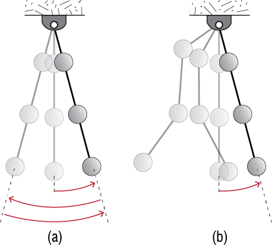
We can’t quit at intuition of course and so the question is whether or not such harmonic motion is mathematically possible. For the whole system to move with the same frequency but different amplitudes along the generalized coordinates, the equations of motion should admit a solution that may be expressed as \[ \gctvec = \colmat{\gc_1 (t) \\ \gc_2 (t) \\ \vdots \\ \gc_n (t)} = \colmat{\eigvecs_{1} \\ \eigvecs_{2} \\ \vdots \\ \eigvecs_{n}} \cosp{\freq t - \phs} = \eigvec \cosp{\freq t - \phs} \qquad(7.1)\] where \(\eigvecs_{j}\) is the time independent amplitude at the jth generalized coordinate, \(\freq\) is the frequency with which the whole system moves, and \(\phs\) is some possible lag. Note that the way the system looks as it moves is governed by \(\eigvec\) or, more precisely, the ratios of \(\eigvecs_{j}\) to each other. As we assume these amplitudes to be time invariant, the relative shape of deformation is constant by assumption, with instantaneous positions communally regulated by the time dependent cosine component.
Admissibility of such a motion depends on whether the equation of motion for free vibrations, given by \[ \mmat \ddgctvec + \kmat \gctvec = \zerocol \qquad(7.2)\] may be satisfied by this solution. The damping matrix is conspicuously missing of course, but we will come back to that in a little while. To see whether or not the solution works we plug the proposed expression Equation 7.1 into Equation 7.2 to get \[ -\freq^2 \mmat \eigvec \cosp{\freq t - \phs} + \kmat \eigvec \cosp{\freq t - \phs} = \left(\kmat - \freq^2 \mmat \right) \eigvec \cosp{\freq t - \phs} = \zerocol \qquad(7.3)\] If such a solution is to exist, Equation 7.3 should be satisfied at all times. Obviously the cosine term can take on nonzero values, and so there are only two possibilities. It could be that \(\eigvec \equiv \zerocol\), which means that the system is not moving at all! Equilibrium is naturally satisfied in that case (remember that initially the system is at an equilibrium state) but this is not the option we are seeking; this is called the trivial solution. The nontrivial solution is the possibility of \[ \left(\kmat - \freq^2 \mmat \right) \eigvec = \zerocol \] which means that, for a nonzero \(\eigvec\), the matrix \(\left(\kmat - \freq^2 \mmat \right)\) is (to borrow from linear algebra) rank deficient, i.e. its determinant is zero and its inverse does not exist; for if it did, then the only possibility would be \(\eigvec = \left(\kmat - \freq^2 \mmat \right)^{-1} \zerocol = \zerocol\).
What does this mean? Well, we were seeking for the possibility of harmonic motion and it turns out that: yes, it is possible, but only for those values of \(\freq\) which make \[ \left| \kmat - \freq^2 \mmat \right| = 0 \qquad(7.4)\] where \(\left| \mtrx{A} \right|\) denotes the determinant of matrix \(\mtrx{A}\). For an \(n\)-DOF system, \(\mmat\) and \(\kmat\) are \(n \times n\) matrices, and the characteristic equation of Equation 7.4 is of order \(n\) in \(\freq^2\). The characteristic equation, therefore, has \(n\) roots, meaning there are \(n\) values of \(\freq\) which may make the determinant zero. From a more physical perspective: an MDOF system has multiple frequencies, as many as the number of degrees of freedom, with which it may execute harmonic motion.
In linear algebra, this problem is usually cast as the generalized eigenvalue problem: find all \(\freq^2\) and \(\eigvec\) for which \[ \freq^2 \mmat \eigvec = \kmat \eigvec \qquad(7.5)\] is satisfied. When matrix dimensions are very small, it may be possible to solve this problem by hand. After a while it becomes tedious and outright impossible to proceed by hand and so the eigenvalue problems are almost always solved numerically.1 In the structural dynamics jargon, the eigenvalues of Equation 7.5, or rather their positive square roots the \(\freq\)’s, are called the natural frequencies or modal frequencies, and its eigenvectors the \(\eigvec\)’s are called the mode shapes of the system. This terminology is well established and we will adhere to it.
To give a flavor of what this all means, let us work on the two-story shear building shown in Figure 7.2. It is relatively easy to show that the mass and stiffness matrices for this simple model are given by \[ \mmat = \begin{bmatrix} m_1 & 0 \\ 0 & m_2 \end{bmatrix}, \quad \kmat = \begin{bmatrix} k_1 + k_2 & -k_2 \\ -k_2 & k_2 \end{bmatrix} \]
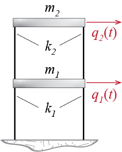
Let us simplify the algebra by considering a particular case with \(m_1 = m_2 = m\), \(k_1 = 2k\) and \(k_2 = k\). The eigenvalue problem becomes \[ \left(\begin{bmatrix} 3k & -k \\ -k & k \end{bmatrix} - \freq^2 \begin{bmatrix} m & 0 \\ 0 & m \end{bmatrix}\right) \eigvec = \zerocol \qquad(7.6)\] with the characteristic equation given by \[ \left| \kmat - \freq^2 \mmat \right| =\left| \begin{bmatrix} 3k-\freq^2 m & -k \\ -k & k - \freq^2 m \end{bmatrix} \right| = m^2 (\freq^2)^2 - 4 {k}{m} \freq^2 + 2 k^2 = 0 \qquad(7.7)\] which yields the following two roots via the well-known quadratic formula: \[ \freq_1^2 = (2 - \sqrt{2}) \ratio{k}{m}, \quad \freq_2^2 = (2 + \sqrt{2}) \ratio{k}{m} \] By convention, when numbering the multiple frequencies of a system, they are numbered in increasing order so that \[ \freq_1 \leq \freq_2 \leq \ldots \leq \freq_{n-1} \leq \freq_n \] This convention is almost always adhered to, with the lowest frequency \(\freq_1\) generally referred to as the fundamental frequency of the system; the corresponding period \(\period_1 = 2 \pi/ \freq_1\), which happens to be the longest period of the system, is analogously called the fundamental period. Experience has shown that in most cases the largest amplitudes of motion occur in relation to this fundamental period, and therefore its proper estimation is of prime importance.
So what kind of a deformed shape does the system take on while moving with any of these frequencies; in other words, what are the corresponding \(\eigvec\)’s? We have to go back to Equation 7.7 and try to figure out the \(\eigveci{i}\) that accompanies the particular frequency \(\freq_i\). For our system we have two frequencies and two such mode shapes. We will denote the related mode shapes by \(\eigveci{1}\) and \(\eigveci{2}\), and their components as \[ \eigveci{1} = \colmat{\eigvecs_{11} \\ \eigvecs_{21}}, \quad \eigveci{2} = \colmat{\eigvecs_{12} \\ \eigvecs_{22}} \] where we take \(\eigvecs_{ji}\) to mean the jth component of the ith mode shape. In short, \(\eigvecs_{ji}\) is the relative amplitude at generalized coordinate j while the system moves in mode i. For \(\freq_1^2\), the eigenvalue equation is given by \[ \left(\begin{bmatrix} 3k & -k \\ -k & k \end{bmatrix} - \freq_1^2 \begin{bmatrix} m & 0 \\ 0 & m \end{bmatrix}\right) \eigveci{1} = \begin{bmatrix}3k - (2-\sqrt{2})k & -k \\ -k & k - (2-\sqrt{2})k \end{bmatrix} \colmat{\eigvecs_{11} \\ \eigvecs_{21}} = \zerocol \] which seemingly yields two equations as \[ (1+\sqrt{2}) \eigvecs_{11} - \eigvecs_{21} = 0, \quad \eigvecs_{11} - (1 -\sqrt{2}) \eigvecs_{21} = 0 \] but these two equations are in fact one and the same: \[ \eigvecs_{21} = 2.414 \eigvecs_{11} \] How do we determine two unknowns with one equation? We can’t. Mathematically this result is to be expected since, for the eigenvalue problem to work out, \(\eigvec\) must lie in the null space of the rank deficient coefficient matrix \((\kmat-\freq^2 \mmat)\); consequently, if some \(\eigvec\) satisfies \((\kmat-\freq^2 \mmat)\eigvec=\zerocol\), then so does \(a\eigvec\) where \(a\) is an arbitrary multiplier. Does this make sense physically? Think about it this way: What we have determined is the relative shape the system maintains as it moves with a certain frequency, but the absolute amplitude of motion should depend on the initial conditions (e.g. how large is the initial perturbation?). We have not considered such information yet and it will have to wait until we discuss the initiation of motion. Until then, we have to be satisfied with only the relative ratios of what will occur along the generalized coordinates. We may therefore choose to represent the relative amplitudes according to any particular scaling at this point. We may, for example, assign a magnitude of one to a particular generalized coordinate; say we assign \(\eigvecs_{11}=1\), in which case we have \[ \eigveci{1}=\colmat{1 \\ 2.414} \] Alternatively we may adjust the values of the coefficients so that the mode shape has unit magnitude, i.e. \({\eigveci{1}^T}\eigveci{1}=1\), in which case we would have \[ \eigveci{1}=\colmat{0.383 \\ 0.924} \] Both of these choices are fine in that the actual response that we will observe as the system oscillates with the fundamental frequency will be given by \[ \gctvec = A_1 \eigveci{1} \cosp{\freq_1 t - \phs_1} \] where, depending on the particular scaling we choose, the coefficient \(A_1\) may take on different values, but at the end all choices will yield the same \(\gctvec\).
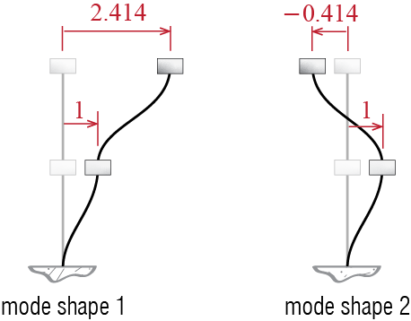
There is also a second frequency with which harmonic motion is possible. The mode shape corresponding to \(\freq_2\) is prescribed by \[ \left(\begin{bmatrix} 3k & -k \\ -k & k \end{bmatrix} - \freq_2^2 \begin{bmatrix} m & 0 \\ 0 & m \end{bmatrix}\right) \eigveci{2} = \begin{bmatrix}3k - (2+\sqrt{2})k & -k \\ -k & k - (2+\sqrt{2})k \end{bmatrix} \colmat{\eigvecs_{12} \\ \eigvecs_{22}} = \zerocol \] which yields the following relationship: \[ \eigvecs_{22} = -0.414 \eigvecs_{12} \] If we again assign a unit amplitude to the first generalized coordinate, we have \[ \eigveci{2}=\colmat{1 \\ -0.414} \] Finally as there are two possibilities of harmonic motion, the general solution is the superposition the two, giving as the final answer the following expression for our example of the two story shear building: \[ \gctvec = A_1 \eigveci{1} \cosp{\freq_1 t - \phs_1} + A_2 \eigveci{2} \cosp{\freq_2 t - \phs_2} \qquad(7.8)\] Before we move on, it is worthwhile to visualize the mode shapes for such a structure, schematically sketched in Figure 7.3. In the fundamental mode, the relative movements of the masses are such that the building sways to one side as a whole. The second mode, on the other hand, comprises movement of masses in opposite directions, with one sign change or one cross-over. We’ll see in numerous cases that such modal motions are typical of many similar systems, with number of crossovers increasing with increasing mode numbers and the fundamental mode comprising a unidirectional movement.
The more commonly encountered version is the eigenvalue problem expressed as \(\lambda \nvec{x} = \mtrx{A} \nvec{x}\). Eigenvalue problems are so common and important in mathematical physics that there are extremely efficient and well-established algorithms available in computing platforms. We therefore will not delve into how this problem is solved numerically.↩︎
7.2 Orthogonality of Modes
A property known as orthogonality of the mode shapes leads to a very well-known and extremely useful analyses tool for MDOF systems. To demonstrate this property, let us assume we have an n-DOF system with symmetric \(\mmat\) and \(\kmat\), with frequencies \(\freq_i\) and mode shapes \(\eigveci{i}\) for \(i=1,2,\ldots,n\). For ease of proof let us further consider the case with no repeated roots so that \(\freq_i \neq \freq_j\) for \(i \neq j\); in structural dynamics this is almost always the case except when there is perfect symmetry so that the structure has identical periods in two directions but even in such cases the following conclusions will hold.
For such a system, the eigenvalue problem for two different modes, modes \(i\) and \(j\), will be given by the following equations: \[
\kmat\eigveci{i} = \freq_i^2 \mmat \eigveci{i}
\qquad(7.9)\] \[\kmat\eigveci{j} = \freq_j^2 \mmat \eigveci{j}
\qquad(7.10)\] If we pre-multiply Equation 7.9 by \(\eigveci{j}^T\) and Equation 7.10 by \(\teigveci{i}\), we obtain: \[
\eigveci{j}^T \kmat\eigveci{i} = \eigveci{j}^T \freq_i^2 \mmat \eigveci{i}
\qquad(7.11)\] \[
\teigveci{i} \kmat\eigveci{j} = \freq_j^2 \teigveci{i} \mmat \eigveci{j}
\qquad(7.12)\] Since the mass and stiffness matrices are symmetric, the transpose of Equation 7.12 yields \[
(\teigveci{i} \kmat\eigveci{j})^T = \eigveci{j}^T \kmat^T\eigveci{i} = \eigveci{j}^T \kmat \eigveci{i} = \freq_j^2 \eigveci{j}^T \mmat \eigveci{i}
\qquad(7.13)\] so that the difference of Equation 7.11 and Equation 7.13 leads to: \[
0 = (\freq_i^2 - \freq_j^2) \eigveci{j}^T \mmat \eigveci{i}
\qquad(7.14)\] The equality in Equation 7.14 demands that either \((\freq_i^2 - \freq_j^2)=0\) or \(\eigveci{j}^T \mmat \eigveci{i}=0\); but if there are no repeated roots, \(\freq_i^2 - \freq_j^2 \neq 0\) and so it must be true that \[
\eigveci{j}^T \mmat \eigveci{i} = 0
\qquad(7.15)\] whenever \(i \neq j\). This condition also implies by the eigenvalue equation that \[
\eigveci{j}^T \kmat \eigveci{i} = 0 \quad \text{for } i\neq j.
\qquad(7.16)\] When \(i=j\), on the other hand, these products may yield nonzero values. Let us denote those values by \[
\teigveci{i} \mmat \eigveci{i} = \modm_i, \quad \teigveci{i} \kmat \eigveci{i} = \modk_i
\qquad(7.17)\] where \(\modm_i\) is called the modal mass and \(\modk_i\) the modal stiffness for the i-th mode. The orthogonality conditions are generally expressed more concisely via the Kronecker-\(\delta\) \(\delta_{ij}\) defined as \[
\delta_{ij} = \begin{cases}1 & i=j \\ 0 & i \neq j \end{cases}
\] so that modal orthogonality may be simply written as follows: \[
\eigveci{j}^T \mmat \eigveci{i} = \modm_i \delta_{ij}, \quad \eigveci{j}^T \kmat \eigveci{i} = \modk_i \delta_{ij}
\qquad(7.18)\] It is important to note that these relations imply a formulation to calculate the frequencies. Considering the eigenvalue equation for the i-th mode and premultiplying it with \(\teigveci{i}\) we have \[
\teigveci{i} \kmat\eigveci{i} = \freq_i^2 \teigveci{i} \mmat \eigveci{i} \rightarrow \freq_i^2 = \ratio{\teigveci{i} \kmat\eigveci{i}}{\teigveci{i} \mmat\eigveci{i}} = \ratio{\modk_i}{\modm_i}
\qquad(7.19)\] The particular values of the modal masses and stiffnesses will naturally depend on the particular scaling chosen for the mode shapes. Consider for example the two story shear building of Figure 7.2 discussed previously, with the mass and stiffness matrices given by \[
\mmat = \begin{bmatrix} m & 0 \\ 0 & m \end{bmatrix}, \quad \kmat = \begin{bmatrix} 3k & -k \\ -k & k \end{bmatrix}
\] One option that was considered was to scale the mode shapes so that the amplitude corresponding to the first generalized coordinate was of unit magnitude, leading to \[
\eigveci{1}=\colmat{1 \\ 2.414}, \quad \eigveci{2}=\colmat{1 \\ -0.414}
\] With these mode shapes, Equation 7.18 yields \[
\modm_1 = \eigveci{1}^T \mmat \eigveci{1} = 6.83 m, \quad \modm_2 = \eigveci{2}^T \mmat \eigveci{2} = 1.17 m, \quad \eigveci{1}^T \mmat \eigveci{2} = 0
\] and \[
\modk_1 = \eigveci{1}^T \kmat \eigveci{1} = 4 k, \quad \modk_2 = \eigveci{2}^T \kmat \eigveci{2} = 4k, \quad \eigveci{1}^T \kmat \eigveci{2} = 0
\] One way to check the algebra is to make sure that the modal masses and stiffness lead to the calculated frequencies: \[
\ratio{\modk_1}{\modm_1} = 0.586 \frac{k}{m} = \freq_1^2, \quad \ratio{\modk_2}{\modm_2} = 3.41 \frac{k}{m} = \freq_2^2
\] An alternative scaling for the first mode shape was also considered subject to \(\eigveci{1}^T\eigveci{1} = 1\) in which case the mode shapes were given by \[
\eigveci{1}=\colmat{0.383 \\ 0.924}, \quad \eigveci{2}=\colmat{1 \\ -0.414}
\] so that with these mode shapes, the orthogonality conditions would in this case yield \[
\modm_1 = \eigveci{1}^T \mmat \eigveci{1} = m, \quad \modm_2 = \eigveci{2}^T \mmat \eigveci{2} = 1.17 m, \quad \eigveci{1}^T \mmat \eigveci{2} = 0
\] and \[
\modk_1 = \eigveci{1}^T \kmat \eigveci{1} = 0.586 k, \quad \modk_2 = \eigveci{2}^T \kmat \eigveci{2} = 4k, \quad \eigveci{1}^T \kmat \eigveci{2} = 0
\] and once again we have \[
\ratio{\modk_1}{\modm_1} = 0.586 \frac{k}{m} = \freq_1^2, \quad \ratio{\modk_2}{\modm_2} = 3.41 \frac{k}{m} = \freq_2^2
\] as we should. If the mode shapes are scaled so that the modal masses are equal to \(1\), then the mode shapes are said to be mass normalized. Recall that scaling of a mode shape is essentially multiplying it with a non-zero scalar. If \(\eigveci{i}\) is the arbitrarily scaled mode shape for the \(i\)-th mode, the mass normalized mode shape \(\meigveci{i}\) for that mode is related to \(\eigveci{i}\) through \(\meigveci{i}=s_i \eigveci{i}\) where \(s_i\) is some scalar. To find out what it should be, we can use the condition that mass normalized mode shapes should lead to unit modal masses, so that \[
\meigveci{i}^T \mmat \meigveci{i} = 1 = s_i^2 \teigveci{i} \mmat \eigveci{i} = s_i^2 \modm_i \quad \rightarrow \quad s_i = \ratio{1}{\sqrt{\modm_i}}
\qquad(7.20)\] Our aim is to introduce the terminology of mass normalized mode shapes and to show how they can be constructed. From now on we will refrain from introducing a special symbol for mass normalized mode shapes in an effort to curb symbolic overcrowding and simply state, if necessary, whether a particular mode shape is mass normalized.
Finally, we should note that the eigenvalue problem may be collectively stated for all the modes with a relatively simple matrix notation. Collecting the eigenvalue equation for each mode in consecutive columns we get \[
\left[ \kmat \eigveci{1} \; \kmat \eigveci{2} \; \cdots \; \kmat \eigveci{n} \right] = \left[ \mmat \eigveci{1} \freq_1^2 \; \kmat \eigveci{2} \freq_2^2 \; \cdots \; \kmat \eigveci{n}\freq_n^2 \right]
\] which may also be written as \[
\kmat \left[ \eigveci{1} \; \eigveci{2} \; \cdots \; \eigveci{n}\right] = \mmat \left[ \eigveci{1} \; \eigveci{2} \; \cdots \; \eigveci{n}\right] \begin{bmatrix} \freq_1^2 & 0 & 0 & \cdots & 0 \\ 0 & \freq_2^2 & 0 & \cdots & 0 \\ \vdots & \vdots & \ddots & \cdots & \vdots \\ 0 & 0 & \cdots & \freq_{n-1}^2 & 0\\ 0 & 0 & 0 & \cdots & \freq_n^2\end{bmatrix}
\] Defining the mode shape matrix (or the modal matrix as it is referred to in linear algebra) \(\modmat\) as \[
\modmat = \left[ \eigveci{1} \; \eigveci{2} \; \cdots \; \eigveci{n}\right]
\] and the diagonal spectral matrix \(\spectmat\) as \[
\spectmat = \begin{bmatrix} \freq_1^2 & 0 & 0 & \cdots & 0 \\ 0 & \freq_2^2 & 0 & \cdots & 0 \\ \vdots & \vdots & \ddots & \cdots & \vdots \\ 0 & 0 & \cdots & \freq_{n-1}^2 & 0\\ 0 & 0 & \cdots & 0 & \freq_n^2\end{bmatrix}
\] the eigenvalue problem may be collectively expressed as \[
\kmat \modmat = \mmat \modmat \spectmat
\qquad(7.21)\] Furthermore, the orthogonality conditions may now be expressed as \[
\modmat^T \mmat \modmat = \begin{bmatrix} \modm_1 & 0 & 0 & \cdots & 0 \\ 0 & \modm_2 & 0 & \cdots & 0 \\ \vdots & \vdots & \ddots & \cdots & \vdots \\ 0 & 0 & \cdots & \modm_{n-1} & 0\\ 0 & 0 & 0 & \cdots & \modm_n\end{bmatrix} = \modmmat, \quad \modmat^T \kmat \modmat = \begin{bmatrix} \modk_1 & 0 & 0 & \cdots & 0 \\ 0 & \modk_2 & 0 & \cdots & 0 \\ \vdots & \vdots & \ddots & \cdots & \vdots \\ 0 & 0 & \cdots & \modk_{n-1} & 0\\ 0 & 0 & 0 & \cdots & \modk_n\end{bmatrix} = \modkmat
\] where the diagonal matrices \(\modmmat\) and \(\modkmat\) are called the modal mass matrix and the modal stiffness matrix, respectively.
7.3 Coordinate Transformations and the Eigenvalue Problem
Do coordinate transformations affect frequencies and mode shapes? The answer is probably relatively easy to reason: frequencies characterize how fast the harmonic motions of the whole system take place and therefore they should not depend on which coordinates are used to describe the motion; mode shapes, on the other hand, depict what the system looks like so that different coordinates may require different coefficients to specify the shape of the system. How shall we approach this issue mathematically? Consider two sets of generalized coordinates, \(\gcvec\) and \(\gcvec'\), both of which may be used to define the dynamics of a system. Assume these two coordinate sets are related through \[ \gcvec = \mtrx{T} \gcvec' \] with the eigenvalue problem in \(\gcvec\) coordinates given by: \[ (\kmat -\freq^2 \mmat) \eigvec = \zerocol \] Remembering that \(\matabs{\mtrx{A}\mtrx{B}\mtrx{C}}=\matabs{\mtrx{A}}\matabs{\mtrx{B}}\matabs{\mtrx{C}}\), we note that the characteristic equation \[ \matabs{\kmat -\freq^2 \mmat} = 0 \] will have the same roots as \[ \matabs{\mtrx{T}^{-T}\mtrx{T}^{T}(\kmat -\freq^2 \mmat)\mtrx{T}\mtrx{T}^{-1}}=0 \] since \(\mtrx{T}\mtrx{T}^{-1}=\mtrx{T}^{-T}\mtrx{T}^{T}=\idmat\) where \(\idmat\) is the identity matrix (the determinant of which is equal to 1) and \(\mtrx{T}^{-T}\) is the inverse of \(\mtrx{T}^{T}\). Proceeding with this line of inquiry, we have \[ \mtrx{T}^{-T} (\mtrx{T}^{T}\kmat\mtrx{T} -\freq^2 \mtrx{T}^{T}\mmat\mtrx{T}) \mtrx{T}^{-1}\eigvec = \mtrx{T}^{-T} (\barkmat -\freq^2 \barmmat) \mtrx{T}^{-1}\eigvec = \zerocol \] which implies \[ \mtrx{T}^{-T} (\barkmat -\freq^2 \barmmat) \mtrx{T}^{-1}\eigvec = \zerocol \quad \rightarrow \quad (\barkmat -\freq^2 \barmmat) \mtrx{T}^{-1}\eigvec = \zerocol \qquad(7.22)\] since \(\mtrx{T}^{-T} \neq \zeromat\). Noting that the eigenvalue problem in the transformed coordinates would be given by, \[ (\barkmat -(\freq')^2 \barmmat) \eigvec' = \zerocol \qquad(7.23)\] we conclude, by comparing Equation 7.22 and Equation 7.23, that \[ (\freq')^2 = \freq^2 \] and hence the eigenvalues are unique; i.e., the values of the frequencies of a system are independent of the generalized coordinates employed in writing the equations of motion. It also follows by comparison that \[ \eigvec' = \mtrx{T}^{-1}\eigvec \] so that in general the mode shapes in the transformed coordinates will be different than those in the original coordinate as we had foreseen.
7.4 Modal Analysis of Free Vibrations
As in the SDOF case, free vibrations in the context of MDOF systems refers to motion that takes place due to some initial perturbation from the system’s original equilibrium configuration, with no other external disturbance present. Let’s first consider an undamped system subjected to a set of initial displacements and velocities at time \(t=0\): \[ \mmat \ddgctvec + \kmat \gctvec = \zerocol, \quad \{\gcvec (0) = \gcvecic, \dgcvec (0) = \dgcvecic\} \] where \[ \gcvecic = \colmat{\gc_{1o} \\ \gc_{2o} \\ \vdots \\ \gc_{no}}, \quad \dgcvecic = \colmat{\dgc_{1o} \\ \dgc_{2o} \\ \vdots \\ \dgc_{no}} \] are the generalized coordinate and generalized velocity vectors (column matrices), respectively, at time \(t=0\); we will refer to these two collectively as the initial conditions for the MDOF system. Since this matrix equation is a coupled set of equations, coming up with solutions simultaneously for all generalized coordinates directly is not an easy feat and in most cases simply not feasible. One way to approach this problem is to inquire if there is any way we can decouple the \(n\) equations of motion describing our system. Let’s imagine an alternative set of coordinates, \[ \modcorvec (t) = \begin{bmatrix} \modcor_1(t) \\ \modcor_2(t) \\ \vdots \\ \modcor_N(t) \end{bmatrix} \] such that if the equations were to be written in these coordinates, the mass and stiffness matrices would all become perfectly diagonal. In that case, the first equation would only involve terms with \(\modcor_1\) and \(\ddmodcor_1\), the second equation with \(\modcor_2\) and \(\ddmodcor_2\), and so forth. If this were possible, one would essentially have \(n\)-many uncoupled single degree of freedom systems, each of which would execute simple harmonic motions due to their initial conditions. We have implicitly solved this problem when we derived the eigenvalue problem. Recall that we had asked if it were possible for an MDOF system to execute simple harmonic motion, and the answer we got was that the system had certain frequencies and mode shapes with which it indeed could execute such motion. Furthermore we also showed that these mode shapes were orthogonal in that \[ \modmat^T \mmat \modmat = \modmmat, \quad \modmat^T \kmat \modmat = \modkmat \] where \(\modmmat\) and \(\modkmat\) were diagonal matrices! If we recall the coordinate transformation rules given by Equation 6.20, we may guess where this discussion is going. Let us define a set of coordinates \(\modcorvec (t)\) such that \[ \gctvec = \modmat \modcorvec (t) \] The equations of motion when transformed to these coordinates would yield \[ \modmat^T \mmat \modmat \ddmodcorvec (t) + \modmat^T \kmat \modmat \modcorvec (t) = \modmmat \ddmodcorvec (t) + \modkmat \modcorvec (t) = \zerocol, \quad \{\modcorvec (0) = \modcorvecic, \dmodcorvec (0) = \dmodcorvecic\} \] where \[ \modcorvecic = \colmat{\modcor_{1o} \\ \modcor_{2o} \\ \vdots \\ \modcor_{no}}, \quad \dmodcorvecic = \colmat{\dmodcor_{1o} \\ \dmodcor_{2o} \\ \vdots \\ \dmodcor_{no}}, \] are the initial conditions in the \(\modcorvec\) coordinates. These will have to be calculated via the initial conditions in the \(\gcvec\) coordinates: since the two sets of coordinates are related through the same transformation at all times, we have \[ \gcvecic = \modmat \modcorvecic \; \rightarrow \; \modcorvecic = \modmat^{-1} \gcvecic \] and \[ \dgcvecic = \modmat \dmodcorvecic \; \rightarrow \; \dmodcorvecic = \modmat^{-1} \dgcvecic \] Calculating the initial conditions via matrix inversion is costly, especially if the dimensions are large; furthermore, it may be that we are interested in only a handful of coordinates \(\modcor_i\) (for reasons that will be soon discussed), for which evaluating the whole set by inverting the mode shape matrix is too inefficient. Instead we may proceed as follows: the orthogonality of the mode shapes lead to \[\begin{align*} \teigveci{i} \mmat \gcvecic & = \teigveci{i} \mmat \modmat \modcorvecic \\ & = \colmat{\teigveci{i} \mmat \eigveci{1}^T \;\; \teigveci{i} \mmat \eigveci{2} \;\; \cdots \;\; \teigveci{i} \mmat \teigveci{i} \;\; \cdots \;\; \teigveci{i} \mmat \eigveci{n}} \modcorvecic \\ & = \colmat{0 \;\; 0 \;\; \cdots \;\; \modm_{i} \;\; \cdots \;\; 0} \modcorvecic\\ \teigveci{i} \mmat \gcvecic & = \modm_i \modcor_{io} \end{align*}\] so that \[ \modcor_{io} = \ratio{\teigveci{i} \mmat \gcvecic}{\modm_i} \qquad(7.24)\] and similarly, \[ \dmodcor_{io} = \ratio{\teigveci{i} \mmat \dgcvecic}{\modm_i} \qquad(7.25)\] Both these equations may be collectively written for all modal coordinates via matrix notation as \[ \modcorvecic = \modmmat^{-1} \modmat^{T} \mmat \gcvecic, \quad \dmodcorvecic = \modmmat^{-1} \modmat^{T} \mmat \dgcvecic \qquad(7.26)\] This looks like a lot of work compared to a one-step matrix inversion but we must remember that with increasing dimensions, matrix multiplication becomes much less costly compared to matrix inversions (since the modal mass matrix is diagonal, its inversion is trivial). Keeping in mind that the mass matrix is frequently diagonal, the approach summarized above, which also allows for picking specific subsets, turns out to be quite an efficient way to calculate the initial conditions in the transformed coordinates.
In any case, this is the brief summary of what happened so far: we aim to solve for the free vibration response of an MDOF system, governed by \[ \mmat \ddgctvec + \kmat \gctvec = \zerocol \, ; \quad \{\gcvec (0) = \gcvecic, \dgcvec (0) = \dgcvecic\} \qquad(7.27)\] and we attempt the solution via the transformation \[ \gcvec (t) = \modmat \modcorvec (t) \qquad(7.28)\] with the governing equations in the new coordinates given by \[ \modmmat \ddmodcorvec (t) + \modkmat \modcorvec (t) = \zerocol \, ; \quad \{\modcorvec (0) = \modcorvecic, \dmodcorvec (0) = \dmodcorvecic\} \qquad(7.29)\] It may be better to introduce some terminology to reduce the burden of keeping track of which coordinates are which. When we initially write the equations of motion, the generalized coordinates that we employ almost always have a physical correspondence; for example, a generalized coordinate may be the displacement of a particular point or a rotation of a rigid body about a particular axis. Therefore we will call the initial set of generalized coordinates \(\gcvec\) that we use to derive the governing equations of motion the physical coordinates. In contrast, the transformation of Equation 7.28 relates these physical coordinates to a set of coordinates that have no direct physical correspondence; the \(\modcorvec\) coordinates are essentially a set of abstract variables which help us uncouple the initial set of equations. We will refer to this set of coordinates which are related to the physical coordinates via the mode shape matrix the modal coordinates.
We already discussed that the mass and stiffness matrices in the modal coordinates are diagonal by virtue of mode shape orthogonality conditions. The set of equations of Equation 7.29 are therefore \(n\) uncoupled equations, each of the form: \[ \modm_i \ddmodcor_i (t) + \modk_i \modcor_i (t) = 0 \, ; \quad \{\modcor_i (0) = \modcor_{io}, \dmodcor_i (0) = \dmodcor_{io} \} \] So by transforming to modal coordinates, we have converted our \(n\)-DOF system to \(n\) uncoupled SDOF systems! The good news is that we have solved the SDOF problem before: the free vibration response of an undamped SDOF system is given by Equation 2.11 or equivalently by Equation 2.14, which may be written for the \(i\)-th modal coordinate as \[ \modcor_i (t) = \modcor_{io} \cosp{\freq_i t} + \frac{\dmodcor_{io}}{\freq_i} \sinp{\freq_i t} = \modcoramp_i \cosp{\freq_i t - \phs_i} \qquad(7.30)\] where \[ \freq_i = \sqrt{\ratio{\modk_i}{\modm_i}}, \quad \modcoramp_i = \sqrt{\modcor_{io}^2 + \left(\frac{\dmodcor_{io}}{\freq_i}\right)^2}, \quad \tan \phs_i = \frac{\left(\dmodcor_{io}/{\freq_i}\right)/\modcoramp_i}{\modcor_{io}/\modcoramp_i} \qquad(7.31)\] We are not done yet. What we want is the response of the system in physical coordinates, i.e. the solution to the original set of equations of Equation 7.27. Hence we must transform back to the physical coordinates via \[ \begin{array}{rcl} \gcvec (t) & \!\!\! = & \!\!\! \modmat \modcorvec (t) = \eigveci{1} \modcor_1 (t) + \eigveci{2} \modcor_2 (t) + \cdots + \eigveci{n} \modcor_n (t) \\ & \!\!\! = & \!\!\! \modcoramp_1 \eigveci{1} \cosp{\freq_1 t - \phs_1}+ \modcoramp_2 \eigveci{2} \cosp{\freq_2 t - \phs_2} + \cdots + \modcoramp_n \eigveci{n} \cosp{\freq_n t - \phs_n} \end{array} \qquad(7.32)\] and we should note that the solution in Equation 7.32 is essentially the same (except for the number of modes involved) as the one we obtained at first when we were seeking the possibility of harmonic motion, i.e. Equation 7.8.
The expansion \[ \gcvec (t) = \modmat \modcorvec (t) = \sum_{i=1}^{n} \eigveci{i} \modcor_{i} (t) \] is generally referred to as the modal expansion. This equation provides a particular interpretation of the response as being the superposition of some variables which are in some sense independent, this said independence being related to the orthogonality of the mode shapes. Consider, for example, what would happen if the system were to be set in motion via an initial displacement pattern that looked like one of the mode shapes, say the \(j\)th mode shape; i.e. consider the following initial conditions: \[ \gcvecic = \epsilon \eigveci{j}, \; \dgcvecic = \zerocol \] where \(\epsilon\) is a non-zero real number. The initial conditions in modal coordinates are then given by \[ \modcor_{io} = \ratio{\teigveci{i} \mmat \gcvecic}{\modm_i} = \ratio{\teigveci{i} \mmat \epsilon \eigveci{j}}{\modm_i} = \epsilon \delta_{ij} \] since \(\teigveci{i} \mmat \eigveci{j} = \modm_{i} \delta_{ij}\) due to the orthogonality conditions. The initial velocities in modal coordinates, i.e. \(\modcorvecic\), are zero since all initial velocities in physical coordinates are zero. Therefore, when the initial displacements are a scaled version of the \(j\)th mode shape, the only non-zero response comes from the \(j\)th modal coordinate, and it is given by \[ \modcor_{j} (t) = \epsilon \cosp{\freq_j t} \] with all other \(\modcor_{i} (t) \equiv 0\) for \(i \neq j\). The response of the system is then given by \[ \gcvec (t) = \sum_{i=1}^{n} \eigveci{i} \modcor_{i} (t) = \epsilon \eigveci{j} \cosp{\freq_j t} \] This result is important and it is worthwhile to state it again in plain language: if an MDOF system is set in motion by an initial perturbation that coincides with one of the mode shapes of the system, then the system will oscillate with only the frequency of that particular mode to which that mode shape belongs. No other mode will contribute to the response. It is yet speculative but somewhat foreseeable that if an initial displacement pattern does not fully comply with a particular mode shape but mostly resembles it, than the biggest contribution to the response may be expected to come from that particular mode, with smaller but possibly non-zero contributions from the others. This pattern we shall demonstrate through some examples.
EXAMPLE 7 .1
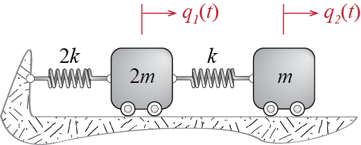
Consider a 2-DOF system with masses and spring constants defined as shown in Figure 7.4. We would like to calculate its free vibration response to initial conditions \[ \gcvec (0) = \colmat{Q/2\\ Q} = Q \colmat{1/2\\ 1}, \; \dgcvec(0) = \colmat{0 \\ 0} \] We first have to derive the governing equations of motion. Say we use the Lagrangian approach to construct the mass and stiffness matrices. The kinetic and potential energies are given by \[ \ke = \frac{1}{2} 2m \dgc_1^2 + \frac{1}{2} m \dgc_2^2, \quad \pe = \frac{1}{2} 2k \gc_1^2 + \frac{1}{2} k (\gc_2 - \gc_1)^2 \] so that, by Equation 6.8 and Equation 6.10, \[ m_{11} = \ratio{\partial^2 \ke}{\partial \dgc_1 \partial \dgc_1} = 2m, \; m_{22} = \ratio{\partial^2 \ke}{\partial \dgc_2 \partial \dgc_2} = m, \, m_{12} = \ratio{\partial^2 \ke}{\partial \dgc_1 \partial \dgc_2} = 0 = m_{21} \] and \[ k_{11} = \ratio{\partial^2 \pe}{\partial \gc_1 \partial \gc_1} = 3k, \; k_{22} = \ratio{\partial^2 \pe}{\partial \gc_2 \partial \gc_2} = k, \, k_{12} = \ratio{\partial^2 \pe}{\partial \gc_1 \partial \gc_2} = -k = k_{21} \] The equations governing the free vibration are therefore given by \[ \begin{bmatrix} 2m & 0 \\ 0 & m \end{bmatrix} \colmat{\ddgc_1 \\ \ddgc_2} + \begin{bmatrix} 3k & -k \\ -k & k \end{bmatrix} \colmat{\gc_1 \\ \gc_2} = \colmat{0 \\ 0} \] Next, we find the eigenvalues by solving the characteristic equation that is obtained from \(\left|\kmat -\freq^2 \mmat \right|=0\). The characteristic equation is given by \[ \left|\begin{bmatrix} 3k & -k \\ -k & k \end{bmatrix} -\freq^2 \begin{bmatrix} 2m & 0 \\ 0 & m \end{bmatrix}\right| = (3k-\freq^2 2m)(k-\freq^2 m)-k^2 = 2m(\freq^2)^2 - 5 k m \freq^2 + 2 k^2= 0 \] or equivalently by \[ (\freq^2)^2 - \frac{5 k}{2 m} \freq^2 + \left(\frac{k}{m}\right)^2 = 0 \] and therefore the squares of the frequencies are calculated as \[ \freq_1^2 = \ratio{1}{2}\ratio{k}{m}, \quad \freq_2^2 = 2 \ratio{k}{m} \] The mode shapes are computed by plugging back each eigenvalue into the equation one at a time and solving for the corresponding eigenvector. For the first one we have \[ \left[\begin{bmatrix}3k & -k \\ -k & k \end{bmatrix} -\ratio{1}{2}\ratio{k}{m} \begin{bmatrix} 2m & 0 \\ 0 & m \end{bmatrix}\right]\colmat{\eigvecs_{11} \\ \eigvecs_{21}} = \colmat{0 \\ 0} \] leading to: \[ \eigvecs_{21} = 2 \eigvecs_{11} \] If per choice we set \(\eigvecs_{11} = 1\), we get \[ \eigveci{1} = \colmat{1 \\ 2} \] Similarly for the second mode shape we have \[ \left[\begin{bmatrix}3k & -k \\ -k & k \end{bmatrix} -2\ratio{k}{m} \begin{bmatrix} 2m & 0 \\ 0 & m \end{bmatrix}\right]\colmat{\eigvecs_{12} \\ \eigvecs_{22}} = \colmat{0 \\ 0} \] so that \[ \eigvecs_{22} = - \eigvecs_{12} \] and with \(\eigvecs_{12} = 1\) we get \[ \eigveci{2} = \colmat{1 \\ -1} \] The modal masses with these mode shapes are given by \[ \modmmat = \modmat^T \mmat \modmat = \begin{bmatrix} 1 & 2 \\ 1 & -1 \end{bmatrix} \begin{bmatrix} 2m & 0 \\ 0 & m \end{bmatrix} \begin{bmatrix} 1 & 1 \\ 2 & -1 \end{bmatrix} = \begin{bmatrix} 6m & 0 \\ 0 & 3m \end{bmatrix} \] and the modal stiffnesses are given by \[ \modkmat = \modmat^T \kmat \modmat = \begin{bmatrix} 1 & 2 \\ 1 & -1 \end{bmatrix} \begin{bmatrix} 3k & -k \\ -k & k \end{bmatrix} \begin{bmatrix} 1 & 1 \\ 2 & -1 \end{bmatrix} = \begin{bmatrix} 3k & 0 \\ 0 & 6k \end{bmatrix} \] whence we can check \[ \freq_1^2 = \ratio{\modk_1}{\modm_1}=\ratio{1}{2}\ratio{k}{m}, \quad \freq_2^2 = \ratio{\modk_2}{\modm_2}=2\ratio{k}{m} \] If instead we would like to work with mass normalized mode shapes, those we can obtain by scaling the mode shapes above according to Equation 7.20 so that \[ \meigveci{1}=\ratio{1}{\sqrt{6m}}\colmat{1 \\ 2}, \quad \meigveci{2}=\ratio{1}{\sqrt{3m}}\colmat{1 \\ -1} \] and the modal mass and stiffness matrices in this case would be given by \[ \modmmat = \begin{bmatrix} 1 & 0 \\ 0 & 1 \end{bmatrix}, \quad \modkmat = \begin{bmatrix} \frac{1}{2}\frac{k}{m} & 0 \\ 0 & 2\frac{k}{m} \end{bmatrix} \] Since there is no particular advantage to use mass normalized mode shapes for this system, we will proceed with our original set of mode shapes.
To solve for the response in modal coordinates, we must find the initial conditions in those coordinates. By Equation 7.24 and Equation 7.25 we have, \[ \modcor_{1o} = \frac{1}{\modm_1}\eigveci{1}^T \mmat \gcvecic = \frac{1}{6m} \left\{1 \;\;\; 2\right\} \begin{bmatrix} 2m & 0 \\ 0 & m \end{bmatrix} \colmat{Q/2 \\ Q} = \ratio{Q}{2} \] and \[ \modcor_{2o} = 0, \quad \dmodcor_{1o} = \dmodcor_{2o} = 0 \] which the reader may easily verify. This result should, of course, be expected as per our discussion preceding this example: the initial condition shape coincides with the first mode in that \(\gcvecic = (Q/2) \eigveci{1}\), and therefore it sets in motion only the corresponding first mode and does not induce any motion in the other mode. The amplitudes and the phase angles in modal coordinates are calculated via Equation 7.31 to obtain \[ \modcoramp_1 = \frac{Q}{2}, \quad \phs_1 = \arctan \ratio{0}{1} = 0, \quad \modcoramp_2 = 0 \] so that \[ \modcor_1 (t) = \ratio{Q}{2} \cosp{\freq_1 t}, \quad \modcor_2 (t) \equiv 0 \] The response in physical coordinates is then given by \[ \gcvec (t) = \colmat{\gc_1 (t) \\ \gc_2 (t)} = \eigveci{1} \modcor_1 (t) + \eigveci{2} \modcor_2 (t) = Q \colmat{1/2 \\ 1} \cosp{\freq_1 t} = \colmat{\frac{Q}{2} \cosp{\freq_1 t} \\ Q \cosp{\freq_1 t}} \] The response of the two masses are shown Figure 7.5, plotted against dimensionless time \(\tau = t/\period_1 = (\freq_1 t)/(2 \pi)\). Due to the given initial conditions both masses move in phase, but the displacement of the first mass is half of that of the second mass.
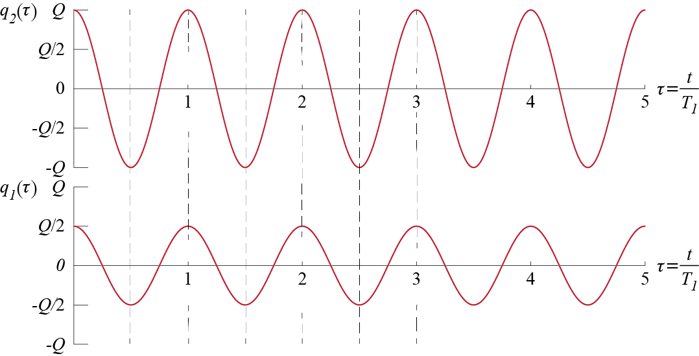
What if the system was subjected to some other initial conditions? Consider first what would happen if the initial displacement pattern didn’t exactly match one of the modes but was given by \[ \gcvecic = \colmat{2Q/3 \\ Q}, \quad \dgcvecic = \zerocol \] Note that the initial displacement pattern still resembles the first mode more than the second one. In this case the initial conditions in modal coordinates will be given by \[\begin{align*} \modcor_{1o} & = \frac{1}{6m} \left\{1 \;\;\; 2\right\} \begin{bmatrix} 2m & 0 \\ 0 & m \end{bmatrix} \colmat{2Q/3 \\ Q} = \ratio{5}{9}Q \\ \modcor_{2o} & = \frac{1}{3m} \left\{1 \;\;\; -1\right\} \begin{bmatrix} 2m & 0 \\ 0 & m \end{bmatrix} \colmat{2Q/3 \\ Q} = \ratio{1}{9}Q \end{align*}\] and \(\dmodcor_{1o} = \dmodcor_{2o} = 0\). The modal amplitudes and phase angles will be \[ \modcoramp_1 = \frac{5}{9}Q, \quad \phs_1 = \arctan \ratio{0}{1} = 0, \quad \modcoramp_2 = \frac{1}{9}Q, \quad \phs_2 =\arctan \ratio{0}{1} = 0 \] with the modal responses given by \[ \modcor_1 (t) = \ratio{5}{9}Q \cosp{\freq_1 t}, \quad \modcor_2 (t) =\ratio{1}{9}Q \cosp{\freq_2 t} \] leading to the following displacement time histories for the two masses: \[ \gcvec (t) = \colmat{\gc_1 (t) \\ \gc_2 (t)} = \eigveci{1} \modcor_1 (t) + \eigveci{2} \modcor_2 (t) = \colmat{\frac{5}{9}Q \cosp{\freq_1 t} + \frac{1}{9}Q \cosp{\freq_2 t} \\ \frac{10}{9}Q \cosp{\freq_1 t} - \frac{1}{9}Q \cosp{\freq_2 t}} \] In terms of normalized time \(\tau = t/\period_1 = (\freq_1 t)/(2 \pi)\), the responses are given by \[ \colmat{\gc_1 (\tau) \\ \gc_2 (\tau)} = \colmat{\frac{5}{9}Q \cosp{2 \pi \tau} + \frac{1}{9}Q \cosp{4 \pi \tau} \\ \frac{10}{9}Q \cosp{2 \pi \tau} - \frac{1}{9}Q \cosp{4 \pi \tau}} \] wherein we have incorporated the information that for our system, \(\freq_2 = 2 \freq_1\). These displacement time histories plotted against normalized time \(\tau\) are shown in Figure 7.6. It is noteworthy that even though there is no exact match between the initial displacement pattern and the first mode, they are relatively similar and therefore most of the physical response is contributed by the first mode.
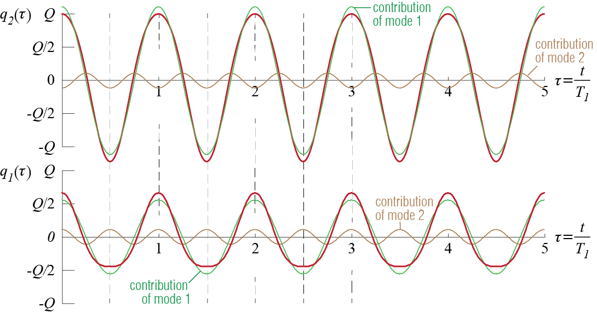
Finally, consider what would happen if the system were now given a set of initial velocities, so that the initial conditions are given by \[ \gcvecic = \zerocol, \; \dgcvecic = \colmat{v \\ -v} = v \colmat {1 \\ -1} \] In this case the initial conditions in modal coordinates are calculated to be \(\modcor_{1o} = \modcor_{2o}=0\), \[\begin{align*} \dmodcor_{1o} & = \frac{1}{6m}\left\{1 \;\;\; 2\right\} \begin{bmatrix} 2m & 0 \\ 0 & m \end{bmatrix} \colmat{1 \\ -1} v = 0\\ \dmodcor_{2o} & = \frac{1}{3m} \left\{1 \;\;\; -1\right\} \begin{bmatrix} 2m & 0 \\ 0 & m \end{bmatrix} \colmat{1 \\ -1}v = v \end{align*}\] so that modal amplitudes and phase angles obtained via Equation 7.31 are \[ \modcoramp_1 = 0, \quad \modcoramp_2 = \frac{v}{\freq_2}, \quad \phs_2 = \arctan \ratio{1}{0} = \frac{\pi}{2} \] leading to \[ \modcor_1 (t) \equiv 0, \quad \modcor_2 (t) = \frac{v}{\freq_2} \cosp{\freq_2 t - \frac{\pi}{2}} = \frac{v}{\freq_2} \sinp{\freq_2 t} \] As the initial velocity distribution coincides with the second mode shape (i.e. since \(\modcorvecic = \zerocol\) and \(\dmodcorvecic = v \eigveci{2}\)), only the second mode gets excited and the first mode does not get excited at all. Accordingly, the displacements of the two masses will be given by \[ \colmat{\gc_1 (t) \\ \gc_2 (t)} = \underbrace{\eigveci{1} \modcor_1 (t)}_{\equiv \zerocol} + \eigveci{2} \modcor_2 (t) = \colmat{\frac{v}{\freq_2} \sinp{\freq_2 t}\\ - \frac{v}{\freq_2} \sinp{\freq_2 t}} \] the plots of which are shown in Figure 7.7. In this case the two masses start to move in opposite directions with the initial velocities imposed on them and oscillate with frequency \(\freq_2\), with no contribution form the first mode.
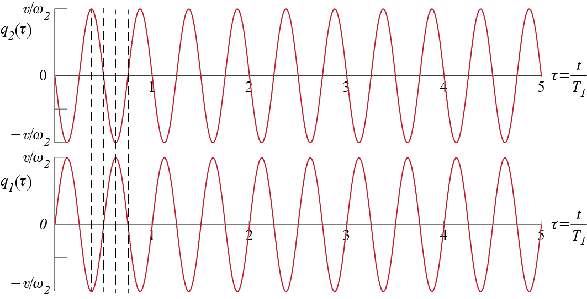
7.5 Approximations for Frequencies
7.5.1 Rayleigh’s Quotient
Consider a particular mode of an MDOF system, with mode shape \(\eigveci{i}\) and frequency \(\freq_i\). We have already seen that the following equation holds exactly true for undamped systems: \[
\freq_i^2 = \ratio{\modk}{\modm} = \ratio{\teigveci{i} \kmat \eigveci{i}}{\teigveci{i} \mmat \eigveci{i}}
\qquad(7.33)\] Note that this ratio is also a statement about the equality of maximum kinetic and potential energies that the system attains as it oscillates harmonically in the \(i\)-th mode. When the system oscillates as such, the generalized displacements and velocities are given by \[
\gcvec (t) = A_i \eigveci{i} \cosp{\freq_i t - \phs_i}, \quad \dgcvec (t) = -\freq_i A_i \eigveci{i} \sinp{\freq_i t - \phs_i}
\] so that the kinetic energy and potential energy at any instant are calculated as \[\begin{align*}
\ke & = \frac{1}{2} \dgcvec^T \mmat \dgcvec = \frac{1}{2} A_i^2 \freq_i^2 \teigveci{i} \mmat \eigveci{i} \sin^2\left(\freq_i t - \phs_i\right)\\
\pe & = \frac{1}{2} \gcvec^T \mmat \gcvec = \frac{1}{2} A_i^2 \teigveci{i} \kmat \eigveci{i} \cos^2\left(\freq_i t - \phs_i\right)
\end{align*}\] The energies will reach their respective maximum values when the sine and cosine terms are equal to unity; note also that whenever the kinetic energy is at a maximum the potential energy is zero and vice versa. The maximum values are therefore given by
\[
\ke_{\max} = \frac{1}{2} A_i^2 \freq_i^2 \teigveci{i} \mmat \eigveci{i}, \quad \pe_{\max} = \frac{1}{2} A_i^2 \teigveci{i} \kmat \eigveci{i}
\] and if there is no energy feed or loss, conservation of energy requires \[
\ke_{\max} = \pe_{\max} \quad \rightarrow \quad \frac{1}{2} A_i^2 \freq_i^2 \teigveci{i} \mmat \eigveci{i} = \frac{1}{2} A_i^2 \teigveci{i} \kmat \eigveci{i}
\] so that \[
\freq_i^2 = \ratio{\teigveci{i} \kmat \eigveci{i}}{\teigveci{i} \mmat \eigveci{i}}
\] Now assume we do not exactly know the mode shape but maybe we have an estimate of what it may look like. This is not so unexpected, especially as an analyst gains experience over different models. Even at an introductory stage we may feel, for example, that if there was a beam with a few heavy masses attached to it, or a tall building that could be approximated by a shear building model, their fundamental mode shapes would look reasonably like those shown in Figure 7.8. Yes, we probably will not know the exact mode shape, but a decent estimate may be possible; and yes, all this is somewhat vague.
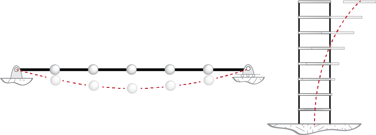
Assume that our estimate for the mode shape is denoted by \(\rayvec\) and it is called the shape vector. We may at least require for consistency that were the system to oscillate harmonically with such a shape, the conservation of energy should still hold. If the frequency of oscillation is denoted by \(\rayfreq\), going through a similar set of steps, we find that conservation of energy requires: \[ (\rayfreq (\rayvec))^2 = \ratio{\trayvec \kmat \rayvec}{\trayvec \mmat \rayvec} \qquad(7.34)\] This ratio is called Rayleigh’s Quotient. At this point we hope that the similarity of Equation 7.34 to Equation 7.33 is sufficient to claim that if \(\rayvec\) is similar to \(\eigveci{i}\), then \(\rayfreq\) will provide an acceptable estimate for \(\freq_i\). The resemblance of the expressions to those discussed in Section 2.5 in the context of generalized single degree of freedom systems is not coincidental: the generalized SDOF approach is essentially the broader version of Rayleigh’s approach. Rayleigh’s Quotient generally works well and it is used in numerical methods to iteratively refine eigenvector estimates to solve an eigenvalue problem.
Let us try to further investigate what it is that we are investigating. The mode shapes of an n-DOF system provide a set of bases in the n-dimensional space due to the orthogonality relations. For some set of coefficients \(a_i\) (for \(i=1,2,\ldots,n\)), we may express the shape column \(\rayvec\) as
\[
\rayvec = a_1 \kmat \eigveci{1}+a_2 \kmat \eigveci{2}+\cdots+a_n \kmat \eigveci{n} = \sum_{i=1}^n a_i \kmat \eigveci{i} = \sum_{i=1}^n a_i \freq_i^2 \mmat \eigveci{i}
\] where the last equality follows from the eigenvalue problem, i.e. \(\kmat \eigveci{i} = \freq_i^2 \mmat \eigveci{i}\). The coefficients \(a_i\) are unique and may be evaluated as \[
\teigveci{i}\rayvec = \teigveci{i}\left(\sum_{j=1}^n a_j \kmat \eigveci{j}\right) = \sum_{j=1}^n a_j \modk_j \delta_{ij} = a_i \modk_i = a_i \freq_i^2 \modm_i
\] where \(\teigveci{i}\kmat\eigveci{j}=\modk_j\delta_{ij}\) and \(\teigveci{i}\mmat\eigveci{j}=\modm_j\delta_{ij}\) are the orthogonality relations we had previously shown. With these expansions, we have \[\begin{align*}
\trayvec\kmat\rayvec & = \left(\sum_{i=1}^n a_i \kmat \eigveci{i}\right)^T \kmat \left(\sum_{j=1}^n a_j \kmat \eigveci{j}\right) \\
& = \sum_{i=1}^n\sum_{j=1}^n a_i a_j \modk_i \delta_{ij} = \sum_{i=1}^n a_i^2 \modk_i = \sum_{i=1}^n a_i^2 \freq_i^2 \modm_i
\end{align*}\] and similarly \[
\trayvec\mmat\rayvec = \sum_{i=1}^n a_i^2 \modm_i
\] so that Rayleigh’s Quotient may be expressed as \[
(\rayfreq)^2 = \ratio{\trayvec\kmat\rayvec}{\trayvec\mmat\rayvec} = \ratio{\sum_{i=1}^n a_i^2 \freq_i^2 \modm_i}{\sum_{i=1}^n a_i^2 \modm_i}
\] As \(\freq_i \geq \freq_1\) for all \(i\), if we express Rayleigh’s Quotient as \[
(\rayfreq)^2 = \ratio{\freq_1^2 \sum_{i=1}^n a_i^2 \ratio{\freq_i^2}{\freq_1^2} \modm_i}{\sum_{i=1}^n a_i^2 \modm_i}
\] we can argue that \[
\ratio{\sum_{i=1}^n a_i^2 \frac{\freq_i^2}{\freq_1^2} \modm_i}{\sum_{i=1}^n a_i^2 \modm_i} \geq 1
\] since \((\freq_i/\freq_1)\geq 1\) for all \(i\). Therefore we may conclude that for any arbitrary (non-zero of course) shape vector \(\rayvec\), \[
(\rayfreq (\rayvec))^2 \geq \freq_1^2
\] so that Rayleigh’s Quotient always provides an upper bound to the lowest frequency. Going through a similar argument we may also show that it will provide a lower bound to the highest frequency.
7.5.2 Rayleigh-Ritz Method
An extension of Rayleigh’s Quotient is achieved by considering more than one shape factor and thereby introducing more flexibility in achieving optimality. Consider using in Rayleigh’s Quotient a shape vector that is composed of \(r\) different candidates, i.e., \[ \rayvec = a_1 \ritzcandvec{1} + a_2 \ritzcandvec{2} + \cdots + a_r \ritzcandvec{r} = \ritzmat \nvec{a} \] where \[ \ritzmat = \begin{bmatrix} \ritzcandvec{1} & \ritzcandvec{2} & \cdots \ritzcandvec{r} \end{bmatrix}, \quad \nvec{a} = \colmat{a_1 \\ a_2 \\ \vdots \\ a_r} \] We may think of this approach as an attempt to approximate multiple modes simultaneously where we pick candidate shapes \(\ritzcandvec{i}\) and try to adjust the coefficients \(a_i\) to somehow get the best possible result. For a given set of \(\ritzcandvec{i}\), the value of Rayleigh’s Quotient will depend on \(a_i\)’s since \[ (\rayfreq)^2 = \ratio{\trayvec \kmat \rayvec}{\trayvec \mmat \rayvec} = \ratio{\nvec{a}^T \ritzmat^T \kmat \ritzmat \nvec{a}}{\nvec{a}^T \ritzmat^T \mmat \ritzmat \nvec{a}} = \ratio{\nvec{a}^T \ritzkmat \nvec{a}}{\nvec{a}^T \ritzmmat \nvec{a}} \] where \[ \ritzkmat = \ritzmat^T \kmat \ritzmat \quad \text{and} \quad \ritzmmat = \ritzmat^T \mmat \ritzmat \] are both symmetric and of dimensions \(r \times r\). As Rayleigh’s Quotient provides an upper bound for the lowest frequency, it should make sense that we ought to seek values of \(a_i\) which will make Rayleigh’s Quotient a minimum for the given set of candidate shapes so that we have the best possible estimate. In other words, we shall seek those values of \(a_i=a_i^{\ast}\) for which \[ \ratio{\partial (\rayfreq)^2}{\partial a_i}\biggr|_{a_i=a_i^{\ast}} = 0 \quad \text{for } i=1,2,\ldots r \] This condition may be expressed in matrix form as \[ \ratio{\partial (\rayfreq)^2}{\partial \nvec{a}}\biggr|_{\nvec{a}=\nvec{a{\ast}}} = \zerocol \] and when we use matrix differentiation rules we obtain \[ \ratio{\partial \nvec{a}^T \ritzmmat \nvec{a}}{\partial \nvec{a}} = 2 \ritzmmat \nvec{a}, \quad \ratio{\partial \nvec{a}^T \ritzkmat \nvec{a}}{\partial \nvec{a}} = 2 \ritzkmat \nvec{a} \] so that \[ \ratio{\partial (\rayfreq)^2}{\partial \nvec{a}}\biggr|_{\nvec{a}=\nvec{a{\ast}}} = \ratio{2}{\nvec{a^{\ast}}^T \ritzmmat \nvec{a^{\ast}}} \left[\ritzkmat \nvec{a^{\ast}} - \ratio{\nvec{a^{\ast}}^T \ritzmmat \nvec{a^{\ast}}}{\nvec{a^{\ast}}^T \ritzmmat \nvec{a^{\ast}}} \ritzmmat \nvec{a^{\ast}} \right]= \zerocol \] Since by definition \[ (\rayfreq)^2 = \ratio{\nvec{a}^T \ritzkmat \nvec{a}}{\nvec{a}^T \ritzmmat \nvec{a}} \] the condition that must be satisfied by \(a_i\) to yield the minimum value of Rayleigh’s Quotient may be expressed as: \[ \left(\ritzkmat - (\rayfreq)^2 \ritzmmat \right) \nvec{a^{\ast}} = \zerocol \qquad(7.35)\] Well, this is an eigenvalue problem, reminiscent of our original eigenvalue problem; but we must note that this new problem is of dimension \(r\), with possibly \(r << n\), so that computationally it is much more feasible. As with any such problem, there will be \(r\) eigenvalues and eigenvectors that satisfy Equation 7.35. The eigenvalues will yield \(r\) natural frequency estimates, \[ \ritzfreq{1}, \ritzfreq{2},\ldots,\ritzfreq{r} \] such that \[ \ritzfreq{i} \geq \freq_i, \quad \text{for } i=1,2,\ldots r \] with estimates improving with better selection of candidate shapes. The eigenvectors obtained from Equation 7.35 are to be used in calculating estimates of the mode shapes of the system so that \[ \ritzvec{i} = \ritzmat \nvec{a^{\ast}_i} \approx \eigveci{i} \]
EXAMPLE 7 .2
What we have is a taut string, subject to a high tension \(N\), and five equal masses attached to it, as shown in Figure 7.9. Due to the high level of tensile force, the masses will move mainly along the vertical, with a total of five degrees of freedom for the system. We would like to estimate the fundamental frequency of the system with Rayleigh’s Quotient.
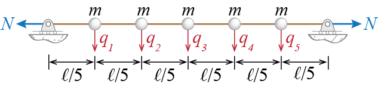
The first order of business is to derive the mass and stiffness matrices. With the generalized coordinates \(\gc_i\) denoting the translation of each mass and with masses concentrated at a point, it should be obvious that the mass matrix will be diagonal, with the values of the masses appearing on the diagonal. We may see that this should be so by considering a nonzero acceleration \(\ddgc_i\) while all other accelerations are zero and see what external forces would be required for equilibrium; the only external force required in that case would be \(m \ddgc_i\) acting along the \(i\)th generalized coordinate.
To construct the stiffness matrix, let us try to identify the stiffness influence coefficients via the force equilibrium approach discussed in Section 6.3.1. What would be the forces required to keep the system in equilibrium when \(\gc_i > 0\) with all other generalized coordinates locked at zero? The free body diagrams of three consecutive masses, with the \(i\)th mass at the center, are shown in Figure 7.10. Due to the imposed displacement, there will be some deformation in the string resulting in a change \(\Delta N\) in the tensile force. It makes a big difference how high the initial tensile force and how big the imposed displacement are. If the considered displacement were to be large, then horizontal effects would have to be included, for otherwise equilibrium would not be possible. For small displacements we can consider only vertical forces so that \[ k_{ii} \gc_i = 2 (N + \Delta N) \sin \theta, \quad k_{i(i-1)} \gc_i = k_{i(i+1)} \gc_i = - (N + \Delta N) \sin \theta \] anf furthermore, since for \(\gc_i \ll 1\) we would have \[ \sin \theta \approx \tan \theta = \ratio{\gc_i}{\ell/5} \] we get \[ k_{ii} \gc_i = 2 (N + \Delta N) \ratio{\gc_i}{\ell/5}, \quad k_{i(i-1)} \gc_i = k_{i(i+1)} \gc_i = - (N + \Delta N) \ratio{\gc_i}{\ell/5} \] Note that with \(\gc_{i(i-1)}\) and \(\gc_{i(i+1)}\) locked, no force needs to be applied along any other generalized coordinate since there will be no deformations in their neighborhoods.
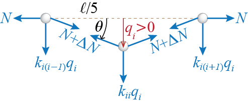
When the initial tension in the string is large and the imposed displacement is small, the change \(\Delta N\) due to deformations will remain very small compared to the initial tension and we may neglect \(\Delta N\) compared to \(N\) for an acceptable approximation. Therefore the stiffness coefficients will be given by \[ k_{ii} = \ratio{10 N}{\ell}, \quad k_{i(i-1)} = k_{i(i+1)} = - \ratio{5 N}{\ell} \] and repeating this analysis for all the generalized coordinates, the stiffness matrix may be shown to be given by: \[ \kmat = \ratio{5 N}{\ell} \begin{bmatrix} 2 & -1 & 0 & 0 & 0\\ -1 & 2 & -1 & 0 & 0\\ 0 & -1 & 2 & -1 & 0\\ 0 & 0 & -1 & 2 & -1\\ 0 & 0 & 0 & -1 & 2 \end{bmatrix} \] Now we are ready to start our investigation of the frequencies. To use Rayleigh’s Quotient we need to estimate what the first mode of vibration might look like. Considering what we would expect if such masses were hung on a string, a sagged cable shape seems a reasonable guess. We will therefore use the two shapes shown in Figure 7.11 as two different shape vectors to employ in Rayleigh’s Quotient: \[ \ritzvec{1} = \colmat{1/3 \\ 2/3 \\ 1 \\ 2/3 \\ 1/3}, \quad \ritzvec{2} = \colmat{1/2 \\ 3/4 \\ 1 \\ 3/4 \\ 1/2} \]
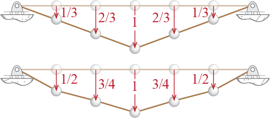
These shape vectors lead to \[\begin{align*} (\rayfreq (\ritzvec{1}))^2 & = \ratio{\tritzvec{1} \kmat \ritzvec{1}}{\tritzvec{1} \mmat \ritzvec{1}} = \ratio{(10 N) /(3 \ell)}{19 m/9} = \ratio{30 N}{19 m \ell} \\ (\rayfreq (\ritzvec{2}))^2 & = \ratio{\tritzvec{2} \kmat \ritzvec{2}}{\tritzvec{2} \mmat \ritzvec{2}} = \ratio{(15 N) /(4 \ell)}{21 m/8} = \ratio{30 N}{21 m \ell} \end{align*}\] so that the two upper bound estimates for the first mode frequency obtained from these respectively are \[ \rayfreq (\ritzvec{1}) = 1.27 \sqrt{\frac{N}{m \ell}} \quad \text{and} \quad \rayfreq (\ritzvec{2}) = 1.20 \sqrt{\frac{N}{m \ell}} \] and the smaller of the two is our best estimate yet for the first frequency of the system: \[ \freq_1 \approx 1.20 \sqrt{\frac{N}{m \ell}} \] We could try many different shapes and see if this upper bound may be further refined but it turns out that the estimate above is pretty good: the exact first two frequencies and mode shapes of the system are \[\begin{align*} \freq_1 & = 1.16 \sqrt{\frac{N}{m \ell}}, \quad \eigveci{1} = \left\{0.50 \;\;\; 0.87 \;\;\; 1 \;\;\; 0.87 \;\;\; 0.50\right\}^{T} \\ \freq_2 & = 2.24 \sqrt{\frac{N}{m \ell}}, \quad \eigveci{2} = \left\{-1 \;\;\; -1 \;\;\; 0 \;\;\; 1 \;\;\; 1\right\}^{T} \end{align*}\] so that the estimate we get for the fundamental frequency from Rayleigh’s Quotient is quite good for many practical purposes.
EXAMPLE 7 .3
To illustrate an application of the Rayleigh-Ritz approach, let us consider the 8 story shear building shown in Figure 7.12. Based on our previous discussions regarding shear buildings, we may expect the first mode to have no crossovers and the second mode to have only one crossover. Candidate shapes \(u_1\) and \(u_2\) shown in Figure 7.12 seem reasonable enough to be used in our analysis: \[ \ritzmat = \left[\ritzcandvec{1} \quad \ritzcandvec{2} \right] = \begin{bmatrix} 1/8 & 1/3 \\ 2/8 & 2/3 \\ 3/8 & 1 \\ 4/8 & 2/3 \\ 5/8 & 1/3 \\ 6/8 & 0\\ 7/8 & -1/3 \\ 1 & -2/3\end{bmatrix} \]
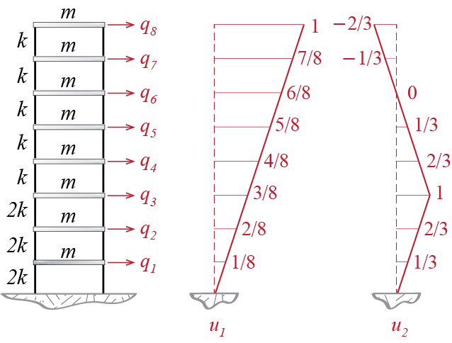
The mass and stiffness matrices are relatively easy to derive. The mass matrix is diagonal as in all shear building models, with all diagonal elements equal to \(m\) in this case. The stiffness matrix will follow the classic progression of shear building models as well and it will be given in this case by \[ \kmat = \begin{bmatrix} 4k & -2k & 0 & 0 & 0 & 0 & 0 & 0 \\ -2k & 4k & -2k & 0 & 0 & 0 & 0 & 0 \\ 0 & -2k & 3k & -k & 0 & 0 & 0 & 0 \\ 0 & 0 & -k & 2k & -k & 0 & 0 & 0 \\ 0 & 0 & 0 & -k & 2k & -k & 0 & 0 \\ 0 & 0 & 0 & 0 & -k & 2k & -k & 0 \\ 0 & 0 & 0 & 0 & 0 & -k & 2k & -k \\ 0 & 0 & 0 & 0 & 0 & 0 & -k & k \\ \end{bmatrix} \] We now have to set up the eigenvalue problem whose solution will help us determine the frequency estimates and the coefficients \(\nvec{a_{i}^{\ast}}\) which we will use in constructing our mode shape estimates. To this end we first calculate \[ \ritzkmat = \ritzmat^T \kmat \ritzmat = \begin{bmatrix} \ratio{11 k}{64} & \ratio{k}{24} \\ \ratio{k}{24} & \ratio{11k}{9}\end{bmatrix}, \quad \ritzmmat = \ritzmat^T \mmat \ritzmat = \begin{bmatrix} \ratio{51 m}{16} & \ratio{m}{6} \\ \ratio{m}{6} & \ratio{8m}{3}\end{bmatrix} \] and then use these matrices in the eigenvalue problem \[ \left(\ritzkmat - (\ritzfreq{i})^2 \ritzmmat \right) \nvec{a_i^{\ast}} = \zerocol \] to obtain \[ (\ritzfreq{1})^2 = 0.054 \ratio{k}{m}, \quad (\ritzfreq{2})^2 = 0.459 \ratio{k}{m}, \quad \nvec{a_1^{\ast}} = \colmat{-0.561 \\ 0.017}, \quad \nvec{a_2^{\ast}} = \colmat{-0.016 \\ 0.613} \] Therefore our estimates for the frequencies of the first two modes become \[ \ritzfreq{1} = 0.232 \sqrt{\ratio{k}{m}} \quad \text{and} \quad \ritzfreq{2} = 0.677 \sqrt{\ratio{k}{m}} \] and for the mode shape estimates we get, after scaling them so that their component at the top floor is equal to one, \[ \ritzvec{1} = \ritzmat \nvec{a_1^{\ast}} = = \colmat{0.11 \\ 0.23\\ 0.34\\ 0.47\\ 0.60\\ 0.74\\ 0.87\\ 1.00}, \quad \text{and} \quad \ritzvec{2} = \ritzmat \nvec{a_2^{\ast}} = \colmat{-0.48 \\ -0.95 \\ -1.43 \\ -0.94 \\ -0.46 \\ 0.03 \\ 0.51 \\ 1.00} \] It turns out that these estimates are quite acceptable since the exact frequencies and mode shapes are given by \[ \freq_1 = 0.222 \sqrt{\ratio{k}{m}}, \quad \freq_2 = 0.623 \sqrt{\ratio{k}{m}}, \quad \eigveci{1} = \colmat{0.12 \\ 0.23 \\ 0.34 \\ 0.54 \\ 0.72 \\ 0.85 \\ 0.95 \\ 1.00}, \quad \eigveci{2} = \colmat{-0.44 \\ -0.79 \\ -0.99 \\ -1.01 \\ -0.63 \\ -0.01 \\ 0.61 \\ 1.00} \] The errors in the frequency estimates and the first mode estimate are quite small, but the errors in the second mode estimate somewhat more pronounced. The success of this approach in general depends on how well the candidate shapes resemble the actual modes and how many such shapes are taken into consideration. If, say, we were to include three candidate vectors, with the addition of \[ \ritzcandvec{3} = \left\{\ratio{1}{3} \;\;\; \ratio{2}{3} \;\;\; 1 \;\;\; \ratio{2}{3} \;\;\; -\ratio{1}{3} \;\;\; 0 \;\;\; \ratio{1}{3} \;\;\; \ratio{2}{3}\right\}^T \] so that with \(\ritzmat = [\ritzcandvec{1} \; \; \ritzcandvec{2} \;\; \ritzcandvec{3} ]\), the estimates for the first two modes will be (note that there will also be an estimate for the third mode which we do note report) \[ \ritzfreq{1} = 0.227 \sqrt{\ratio{k}{m}}, \quad \ritzfreq{2} = 0.668 \sqrt{\ratio{k}{m}}, \quad \ritzvec{1} = \colmat{0.11 \\ 0.23\\ 0.34\\ 0.49\\ 0.69\\ 0.79\\ 0.90\\ 1.00}, \quad \ritzvec{2} = \colmat{-0.38 \\ -0.77 \\ -1.15 \\ -0.79 \\ -0.57 \\ -0.05 \\ 0.48 \\ 1.00} \] A quick overview of results will immediately reveal that increasing the number of candidate shapes have improved both the frequency and the mode shape estimates for the first two modes.
7.6 Free Vibration Response of Damped Systems
7.6.1 Damping in MDOF Systems
Damping. Well, at this point we can’t avoid the issue any further so let’s get into it. We already had a few words to say in Section 2.4 and we will again promote the linear viscous damping model as the model of choice for energy dissipation in small amplitude vibrations, with energy dissipated due to post-yield deformations to be accounted for separately. There is, however, an added level of complexity that damping brings into analysis of MDOF systems: would one be able to uncouple the equations of motion by transforming to modal coordinates in the presence of damping?
The answer is: not necessarily, but for many applications we will assume that is the case. To remind ourselves the mathematical structure on which we base our discussion, the equation of motion of free vibrations for a viscously damped linear MDOF system will be given by: \[ \mmat \ddgcvec (t) + \cmat \dgcvec (t) + \kmat \gcvec (t) = \zerocol \, ; \quad \{\gcvec (0) = \gcvecic, \dgcvec (0) = \dgcvecic \} \qquad(7.36)\] If \(\modmat\) is the matrix of eigenvectors (i.e. mode shapes) obtained from the undamped eigenvalue problem \[ \kmat \modmat = \mmat \modmat \spectmat \qquad(7.37)\] then we know from previous discussions that a coordinate transformation of the form \[ \gcvec (t) = \modmat \modcorvec (t) \] will lead to \[ \modmmat \ddmodcorvec (t) + \modmat^T \cmat \modmat \dmodcorvec (t) + \modkmat \modcorvec (t) = \zerocol \, ; \quad \{\modcorvec (0) = \modcorvecic, \dmodcorvec (0) = \dmodcorvecic \} \] where \(\modmmat\) and \(\modkmat\) are diagonal matrices. So the question is: is \(\modmat^T \cmat \modmat\) a diagonal matrix? If so, then transformation to modal coordinates would successfully uncouple all equations; but if not, then equations would be coupled and the modal analysis approach discussed previously would have to be modified if not altogether abandoned.
If transformation to modal coordinates uncouples also the damping terms so that the damping matrix in modal coordinates, given by \[ \modcmat = \modmat^T \cmat \modmat \] is a diagonal matrix, the system is said to be classically damped, and the damping mechanism is classified as classical. There is no necessity that this should be the normative case. On the other hand it is by far the dominant model employed in analyses because it is simple to work with and its critical parameters may be estimated from (in other words, fit to) experimental observations. The eigenvalue problem that must be dealt with in classically damped systems is the undamped eigenvalue problem of Equation 7.37. If, on the other hand, one would like to obtain eigenvectors that would simultaneously uncouple \(\mmat\), \(\kmat\) and \(\cmat\), one would have to solve the damped eigenvalue problem defined by \[ (\eigval^2 \mmat + \eigval \cmat + \kmat)\deigvec = \zerocol \qquad(7.38)\] where \(\eigval\) is called the damped eigenvalue and \(\deigvec\) is called the damped eigenvector or the damped modeshape. We shall not pursue the non-classical model further in this section and limit the current discussion to classically damped systems. We note in passing that if the system is classically damped, then the eigenvalues and eigenvectors obtained from Equation 7.38 will be equivalent to those that will be obtained from the undamped eigenvalue problem of Equation 7.37.2
The wording (“equivalent”) is suspiciously vague but on purpose so: without going into details now, we just note that for symmetric, positive definite matrices of dimensions \(n \times n\) the damped eigenvalue problem will lead to \(2n\) eigenvalues and eigenvectors that will appear in complex-conjugate pairs and the undamped eigenvalue problem will lead to \(n\) real valued eigenvalues and eigenvectors. If the system is classically damped, the complex conjugate pairs of the damped eigenvalue problem may be easily transformed to the real valued eigenparameters of the undamped eigenvalue problem.↩︎
7.6.2 Modal Analysis of Classically Damped Systems
If an \(n\)-DOF system is classically damped, the equations of motion given by Equation 7.36, when transformed to model coordinates, will yield \[ \modmmat \ddmodcorvec (t) + \modcmat \dmodcorvec (t) + \modkmat \modcorvec (t) = \zerocol \, ; \quad \{\modcorvec (0) = \modcorvecic, \dmodcorvec (0) = \dmodcorvecic \} \qquad(7.39)\] where \[ \begin{array}{c} \modmmat = \begin{bmatrix}\modm_1 & 0 & \cdots & 0 \\ 0 & \modm_2 & \cdots & 0 \\ \vdots & \vdots & \ddots & \vdots \\ 0 & \cdots & 0 & \modm_n \end{bmatrix}, \quad \modcmat = \begin{bmatrix}\modc_1 & 0 & \cdots & 0 \\ 0 & \modc_2 & \cdots & 0 \\ \vdots & \vdots & \ddots & \vdots \\ 0 & \cdots & 0 & \modc_n \end{bmatrix}, \\ \modkmat = \begin{bmatrix}\modk_1 & 0 & \cdots & 0 \\ 0 & \modk_2 & \cdots & 0 \\ \vdots & \vdots & \ddots & \vdots \\ 0 & \cdots & 0 & \modk_n \end{bmatrix} \end{array} \] arr all diagonal so that Equation 7.39 comprises \(n\)-many uncoupled equations of the form \[ \modm_i \ddmodcor_i (t) + \modc_i \dmodcor_i (t) + \modk_i \modcor_i (t) = 0 \, ; \quad \{\modcor_i (0) = \modcoric{i}, \dmodcor_i (0) = \dmodcoric{i} \} \qquad(7.40)\] This is obviously the equation of motion for a viscously damped linear oscillator, same as the one we discussed in much detail starting with its introduction in Section 2.4. As we did in the analysis of SDOF systems, it is beneficial to rewrite this equation dividing through by the modal mass so that \[ \ddmodcor_i (t) + 2 \damp_i \freq_i \dmodcor_i (t) + \freq_i^2 \modcor_i (t) = 0 \, ; \quad \{\modcor_i (0) = \modcoric{i}, \dmodcor_i (0) = \dmodcoric{i} \} \qquad(7.41)\] where \[ \damp_i = \ratio{1}{2\freq_i} \ratio{\modc_i}{\modm_i} \] is called the modal damping ratio. Preference of \(\damp_i\) over \(\modc_i\) (perhaps we could call this the modal damping coefficient) is based on the same reasons that we preferred \(\damp\) over \(c\) in SDOF systems: \(\damp_i\) is a parameter that may be estimated from vibration data and its physical interpretation is more direct.
The solution of Equation 7.41 was derived previously for SDOF systems and it may be expressed (based on Equation 2.23, Equation 2.24, Equation 2.25 and Equation 2.26) as \[ \modcor_i (t) = \expon{-\damp_i \freq_i t }\left[\modcoric{i} \cosp{\dfreq_i t} + \frac{\dmodcoric{i}+ \damp_i \freq_i \modcoric{i}}{\dfreq_i} \sinp{\dfreq_{i} t} \right] = \expon{-\damp_i \freq_i t } \modcoramp_{i} \cosp{\dfreq_i t - \phs_i} \qquad(7.42)\] where \[\begin{align*} \modcoramp_i & = \frac{\sqrt{(\modcoric{i})^2 + 2 \damp \modcoric{i} \left(\ratio{\dmodcoric{i}}{\freq}\right) + \left(\ratio{\dmodcoric{i}}{\freq}\right)^2}}{\sqrt{1-\damp^2}} \\ \phs_i & = \arctan \frac{\sin \phs_i}{\cos \phs_i}= \arctan\ratio{(\dmodcoric{i}+\damp_i\freq_i\modcoric{i}) / (\dfreq_i \modcoramp_i)}{\modcoric{i} / \modcoramp_i} \end{align*}\] and the damped modal frequency of the ith mode, \(\dfreq_i\), given by \[ \dfreq_i = \freq_i \sqrt{1-\damp_i^2} \] Once the solutions for modal coordinates are obtained, the response in physical coordinates is given by modal superposition as for the undamped case: \[ \gcvec (t) = \modmat \modcorvec (t) = \sum_{i=1}^{n} \eigveci{i} \modcor_i (t) \]
7.6.3 Constructing Damping Matrices in Classically Damped Systems
What should the structure of the damping matrix \(\cmat\) be so that the system will be classically damped? Or better yet: do we need a damping matrix at all? If we are to perform linear analysis and the system has a relatively uniform distribution of energy dissipation so that the classical damping model is acceptable, we need only estimate modal damping ratios. In classical modal analysis we may write the equations of motion for the system assuming it is undamped, transform to modal coordinates, and then simply add the damping term to the modal equations. As a relatively few modes generally will suffice to give a decent estimate of the response, we will not even need to estimate damping for all the modes and definitely will not need a full order damping matrix. There are instances however when such a damping matrix in physical coordinates is necessary. Clearly any attempt to numerically integrate the equations of motion in physical coordinates needs such a matrix. Such an approach will be especially important if one were to analyze nonlinear systems, say in structures which undergo yielding and hysteretic behavior under large demands.
There are a few ways to go about this problem, some of which are discussed next.
7.6.3.1 Rayleigh Damping
As the mode shapes obtained from the undamped eigenvalue problem diagonalize both the mass and the stiffness matrices, they will also diagonalize any third matrix that may be written as a superposition of the two. There are two extreme points in this approach: the damping is said to be mass proportional if the damping matrix is given by \[ \cmat=\beta_M \mmat \qquad(7.43)\] Here, \(\beta_M\) is a proportionality constant (scalar) with units \(1/\punit{[unit \; of \; time]}\). With mass proportional damping we have \[ \modmat^T \cmat \modmat = \modcmat = \beta_M \modmat^T \mmat \modmat = \beta_M \modmmat \] so that for the ith mode \[ {\modc_i} = 2 \damp_i \freq_i {\modm_i} = \beta_M {\modm_i} \quad \rightarrow \quad \damp_i = \ratio{\beta_M}{2 \freq_i} \] This construct therefore imposes a decreasing damping ratio with increasing mode number so that higher modes are damped much less than lower modes. The other extreme is when the damping is assumed to be stiffness proportional so that \[ \cmat=\beta_K \kmat \qquad(7.44)\] where \(\beta_K\) is a proportionality constant with units of \([\punit{unit \; of \; time}]\). In this case we have \[ \modmat^T \cmat \modmat = \modcmat = \beta_K \modmat^T \kmat \modmat = \beta_K \modkmat \] so that for the ith mode \[ {\modc_i} = 2 \damp_i \freq_i {\modm_i} = \beta_K {\modk_i} = \beta_K \freq_i^2 {\modm_i} \quad \rightarrow \quad \damp_i = \ratio{\beta_K \freq_i}{2} \] and therefore we end up with much higher modal damping percentages assigned to higher modes compared to those for lower modes. A superposition of the two cases imposes a more uniform range for damping ratios, at least for some portion of the modes, given by \[ \cmat = \beta_M \mmat + \beta_K \kmat \quad \rightarrow \quad \damp_i = \beta_M \ratio{1}{2 \freq_i} + \beta_K \ratio{\freq_i}{2} \]
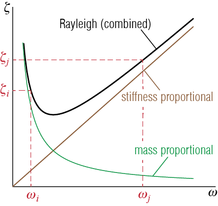
This model is often called Rayleigh Damping after Lord Rayleigh who promoted it.3 The implication of this equation, which is a combination of inversely proportional (\(1/\freq_i\)) and proportional (\(\freq_i\)) terms is that the lower and higher frequency modes will possibly have larger damping ratios compared to intermediate modes, as sketched in Figure 7.13. The two free parameters of the Rayleigh Damping model, \(\beta_M\) and \(\beta_K\), could be determined by prescribing damping ratios for two modes: given \(\damp_i\) and \(\damp_j\), we have \[
\colmat{\damp_i \\ \damp_j} = \begin{bmatrix} 1/(2 \freq_i) & \freq_i / 2 \\
1 / (2 \freq_j) & \freq_j / 2\end{bmatrix} \colmat{\beta_M \\ \beta_K}
\] so that \[
\colmat{\beta_M \\ \beta_K} = \ratio{2\freq_i\freq_j}{\freq_j^2 - \freq_i^2}\begin{bmatrix} \freq_j & -\freq_i \\
- \ratio{1}{\freq_j} & \ratio{1}{\freq_i}\end{bmatrix} \colmat{\damp_i \\ \damp_j}
\qquad(7.45)\] A common practice is to assume that the damping ratios of two modes, say modes \(i\) and \(j\), are equal so that \(\damp_i = \damp_j = \damp\), in which case
\[
\beta_M = \frac{2 \freq_i \freq_j}{\freq_j + \freq_i}\damp, \quad \beta_K = \frac{2}{\freq_j + \freq_i}\damp
\qquad(7.46)\] In practice, the two modes at which the damping ratio is set equal to \(\damp\) are the fundamental (lowest frequency) mode and one of the modes in the high frequency range that still contributes significantly to the response. This choice effectively damps out contributions from higher frequencies, whereas intermediate frequencies will have slightly lower damping ratios than the fundamental frequency.
The obvious issue with Rayleigh Damping is the possibly unwanted variation of damping percentages in the modes other than those for which the damping ratios are prescribed. If one wants to prescribe damping ratios to more than two modes, other approaches should be considered.
A true classic in the field of classical mechanics, “The Theory of Sound” by Lord Rayleigh (formerly/also known as John William Strutt) was originally published in two volumes in 1877 and 1878, respectively.↩︎
7.6.3.2 Caughey Damping
The Rayleigh Damping approach could be extended to prescribe the damping ratios of more than two modes. In what is generally called Caughey Damping or Extended Rayleigh Damping, the damping matrix is written as a linear combination of some powers of mass and stiffness matrices. Consider the undamped eigenvalue problem given by \[ \kmat \eigveci{i} = \freq_i^2 \mmat \eigveci{i} \qquad(7.47)\] with orthogonality conditions \[ \teigveci{j} \kmat \eigveci{i} = \modk_i \delta_{ij}, \quad \teigveci{j} \mmat \eigveci{i} = \modm_i \delta_{ij} \qquad(7.48)\] If we premultiply Equation 7.47 by \(\teigveci{j} \kmat \mmat^{-1}\), we get \[ \teigveci{j} \kmat \mmat^{-1} \kmat \eigveci{i} = \freq_i^2 \teigveci{j} \kmat \mmat^{-1} \mmat \eigveci{i} = \freq_i^2 \teigveci{j} \kmat \eigveci{i} = \freq_i^2 \modk_i \delta_{ij} \] which means that the eigenvalues of the undamped eigenvalue problem diagonalize also the matrix \(\kmat \mmat^{-1} \kmat\). But if that is the case, then premultiplying Equation 7.48 with \(\teigveci{j} \kmat \mmat^{-1} \kmat \mmat^{-1}\) leads to \[\begin{align*} \teigveci{j} \kmat \mmat^{-1} \kmat \mmat^{-1} \kmat \eigveci{i} & = \freq_i^2 \teigveci{j} \kmat \mmat^{-1} \kmat \mmat^{-1} \mmat \eigveci{i} = \teigveci{j} \kmat \mmat^{-1} \kmat \eigveci{i} \\ & = \freq_i^4 \modk_i \Delta_{ij} \end{align*}\] and therefore, by induction, it can be shown that \[ \teigveci{j} \kmat \left(\mmat^{-1} \kmat \right)^s \eigveci{i} = \teigveci{j} \left(\kmat \mmat^{-1}\right)^s \kmat \eigveci{i} = \freq_i^{2s} \modk_i \delta_{ij} \quad \text{for } s \geq 0 \qquad(7.49)\] Similarly, if we start by premultiplying Equation 7.48 by \(\teigveci{j} \mmat \kmat^{-1}\), we have \[ \teigveci{j} \mmat \kmat^{-1} \kmat \eigveci{i} = \modm_{i} \delta_{ij} = \freq_i^2 \teigveci{j} \mmat \kmat^{-1} \mmat \eigveci{i} \] which means that the eigenvalues of the undamped eigenvalue problem diagonalize also the matrix \(\mmat \kmat^{-1} \mmat\). Consequently, premultiplying Equation 7.48 with \(\teigveci{j} \mmat \kmat^{-1} \mmat \kmat^{-1}\) leads to \[ \teigveci{j} \mmat \kmat^{-1} \mmat \kmat^{-1} \kmat \eigveci{i} = \teigveci{j} \mmat \kmat^{-1} \mmat \eigveci{i} = \ratio{1}{\freq_i^2}\modm_{i} \delta_{ij} \\ = \freq_i^2 \teigveci{j} \mmat \kmat^{-1} \mmat \kmat^{-1} \mmat \eigveci{i} \] so that \[ \teigveci{j} \mmat \kmat^{-1} \mmat \kmat^{-1} \mmat \eigveci{i} = \ratio{1}{\freq_i^4}\modm_{i} \delta_{ij} \] and by induction it may be shown that \[ \teigveci{j} \left(\mmat \kmat^{-1}\right)^s \mmat \eigveci{i} = \teigveci{j} \mmat \left(\kmat^{-1} \mmat\right)^s \eigveci{i} = \ratio{1}{\freq_i^{2s}}\modm_{i} \delta_{ij} \quad \text{for } s \geq 0 \qquad(7.50)\] Equation 7.49 and Equation 7.50 may be combined in a single expression by allowing the powers to take on both positive and negative values as \[ \teigveci{j} \mmat \left(\mmat^{-1} \kmat\right)^s \eigveci{i} = {\freq_i^{2s}}\modm_{i} \delta_{ij} \quad \text{for } - \infty < s <\infty \qquad(7.51)\] Note that the classical orthogonality relationships may recovered from Equation 7.51 using \(s = 0\) and \(s=1\).
The point of this exercise is: any damping matrix that has the form \[ \mmat \left(\mmat^{-1} \kmat\right)^s \] will be diagonalized by the undamped mode shapes! A superposition of such matrices corresponding to various powers, which may be expressed as \[ \cmat = \mmat \sum_{s} \beta_s \left(\mmat^{-1} \kmat\right)^s \] will therefore yield a damping matrix \(\cmat\) that will lead to a classically damped system. The coefficients \(\beta_s\) are the free variables we may adjust to prescribe damping ratios for different modes. Consider, for example, the \(i\)-th mode of the system for which (knowing that \(\cmat\) is diagonalized by the mode shapes and via Equation 7.51) we have \[ \teigveci{j} \cmat \eigveci{i} = 2 \damp_i \freq_i \modm_i \delta_{ij} = \sum_{s} \beta_s {\freq_i^{2s}}\modm_{i} \delta_{ij} \] so that \[ \damp_i = \ratio{1}{2 \freq_i} \sum_{s} \beta_s {\freq_i^{2s}} \qquad(7.52)\] When trying to prescribe the damping ratios for \(n'\)-many modes (with \(n' \leq n\)) we should use \(n'\)-many terms in the summation and therefore \(n'\)-many coefficients \(\beta_i\). Therefore we will have \(n'\)-many equations given by Equation 7.52, containing \(n'\)-many unknowns \(\beta_s\) which we solve for using these equations. The question is: which powers of \(s\) should be included? This is important since a particularly egregious error would be to end up with unphysical negative damping ratios, which turns out to be a common issue if an odd number of damping constants are prescribed. In practice it is generally recommended to include an even number of terms, with powers as close to zero as possible. It is straightforward to show that summing over just the two powers \(s=0\) and \(s=1\) will yield the Rayleigh Damping model.
EXAMPLE 7 .4
As an exercise, let us consider the 5-DOF system of masses on a taut string, shown in Figure 7.14. Recall that we had worked on this system before and shown that the mass and stiffness matrices were given by \[ \mmat = \begin{bmatrix} m & 0 & 0 & 0 & 0\\ 0 & m & 0 & 0 & 0\\ 0 & 0 & m & 0 & 0\\ 0 & 0 & 0 & m & 0\\ 0 & 0 & 0 & 0 & m \end{bmatrix}, \quad \kmat = \ratio{N}{\ell} \begin{bmatrix} 10 & -5 & 0 & 0 & 0\\ -5 & 10 & -5 & 0 & 0\\ 0 & -5 & 10 & -5 & 0\\ 0 & 0 & -5 & 10 & -5\\ 0 & 0 & 0 & -5 & 10 \end{bmatrix} \] To turn this into a completely numerical problem, assume \(m=10 \unit{kg}\), \(N = 1000 \unit{N}\) and \(\ell = 1 \unit{m}\) so that \[ \mmat = \begin{bmatrix} 10 & 0 & 0 & 0 & 0\\ 0 & 10 & 0 & 0 & 0\\ 0 & 0 & 10 & 0 & 0\\ 0 & 0 & 0 & 10 & 0\\ 0 & 0 & 0 & 0 & 10 \end{bmatrix}, \quad \kmat = \begin{bmatrix} 10000 & -5000 & 0 & 0 & 0\\ -5000 & 10000 & -5000 & 0 & 0\\ 0 & -5000 & 10000 & -5000 & 0\\ 0 & 0 & -5000 & 10000 & -5000\\ 0 & 0 & 0 & -5000 & 10000 \end{bmatrix} \]
Eigenvalue analysis yields the following values for the five frequencies of the system: \[ \begin{array}{c} \freq_1 = 11.575 \unit{rad/s}, \; \freq_2 = 22.361 \unit{rad/s}, \; \freq_3 = 31.623 \unit{rad/s}, \\ \freq_4 = 38.730 \unit{rad/s}, \; \freq_5 = 43.198 \unit{rad/s} \end{array} \] First say we want to prescribe a damping ratio of \(5\%\) to the first and the fifth modes (i.e. we want \(\damp_1 = \damp_5 = \damp = 0.05\)). Since we want to prescribe only two values we may use the Rayleigh Damping model. According to Equation 7.46, the coefficients that should multiply the mass and stiffness matrices are given by \[ \beta_M = \frac{2 \freq_1 \freq_5}{\freq_1 + \freq_5}\damp = 0.91287, \quad \beta_K = \frac{2}{\freq_1 + \freq_5}\damp = 0.00183 \] so that \[ \cmat = \beta_M \mmat + \beta_K \kmat = \begin{bmatrix} 27.386 & -9.1287 & 0 & 0 & 0\\ -9.1287 & 27.386 & -9.1287 & 0 & 0\\ 0 & -9.1287 & 27.386 & -9.1287 & 0\\ 0 & 0 & -9.1287 & 27.386 & -9.1287\\ 0 & 0 & 0 & -9.1287 & 27.386 \end{bmatrix} \] Now this damping matrix will lead to the following damping ratios: \[ \damp_1 = 5.0 \%, \; \damp_2 = 4.1 \%, \; \damp_3 = 4.3 \%, \; \damp_4 = 4.7 \%, \; \damp_5 = 5.0 \% \] While we have prescribed only the first and the fifth mode damping ratios, the other three have come out relatively close to those two. If we had instead prescribed the damping ratios for the first and the second modes as \(\damp_1 = \damp_2 = 5\%\), the same procedure would yield \[ \beta_M = \frac{2 \freq_1 \freq_2}{\freq_1 + \freq_2}\damp = 0.76268, \quad \beta_K = \frac{2}{\freq_1 + \freq_2}\damp = 0.00295 \] and the damping ratios would be obtained as \[ \damp_1 = 5.0 \%, \; \damp_2 = 5.0 \%, \; \damp_3 = 5.9 \%, \; \damp_4 = 6.7 \%, \; \damp_5 = 7.2 \% \] If there were more modes, the higher ones would get increasing damping values so that one has to be careful. High value of damping in a mode will effectively render the contribution of that mode to the response insignificant: this may be something that is preferred by the analyst but it may also be the source of significant error.
To prescribe the damping ratios for more than two modes we will use the Caughey Damping model. Assume we would like to prescribe the damping ratios for modes 1, 2 and 3 \(5 \%\). The first issue that must be addressed is which powers to include in the summation of Equation 7.52. Since we want to prescribe three damping values, the summation should include four terms (for three coefficients \(\beta_s\)). Assume, for no particular reason, that we would like to use the powers \(s=-4\), \(s=1\) and \(s=6\). In this case, the coefficients \(\beta_s\) will have to be determined from the following three equations: \[\begin{align*} \damp_1 & = 0.05 = \ratio{1}{2 \freq_1} \left(\beta_{-4} {\freq_1^{-8}} + \beta_{1} {\freq_1^{2}} + \beta_{6} {\freq_1^{12}} \right) \\ \damp_2 & = 0.05 = \ratio{1}{2 \freq_2} \left(\beta_{-4} {\freq_2^{-8}} + \beta_{1} {\freq_2^{2}} + \beta_{6} {\freq_2^{12}} \right) \\ \damp_3 & = 0.05 = \ratio{1}{2 \freq_3} \left(\beta_{-4} {\freq_3^{-8}} + \beta_{1} {\freq_3^{2}} + \beta_{6} {\freq_3^{12}} \right) \end{align*}\] Solving for \(\beta_s\) we get \[ \beta_{-4} = 1.783\times 10^{8}, \quad \beta_{1} = 4.509 \times 10^{-3}, \quad \beta_{6} = 0 \] The damping matrix will then be given by \[ \cmat = \mmat \left( \beta_{-4} \left(\mmat^{-1} \kmat\right)^{-4} + \beta_{1} \left(\mmat^{-1} \kmat\right)^{1} + \beta_{6} \left(\mmat^{-1} \kmat\right)^{6}\right) \] which will lead to the following damping ratios for all modes: \[ \damp_1 = 5.0 \%, \; \damp_2 = 5.0 \%, \; \damp_3 = 5.0 \%, \; \damp_4 = -11.1 \%, \; \damp_5 = -56.1 \% \] Obviously the damping values thus obtained are unacceptable for the last two modes. If instead we use the powers \(s=-1\), \(s=0\) and \(s=1\), we would solve for the unknown \(\beta_s\) values using the equations \[\begin{align*} \damp_1 = 0.05 = \ratio{1}{2 \freq_1} \left(\beta_{-1} {\freq_1^{-2}} + \beta_{0} {\freq_1^{0}} + \beta_{1} {\freq_1^{2}} \right) \\ \damp_2 = 0.05 = \ratio{1}{2 \freq_2} \left(\beta_{-1} {\freq_2^{-2}} + \beta_{0} {\freq_2^{0}} + \beta_{1} {\freq_2^{2}} \right) \\ \damp_3 = 0.05 = \ratio{1}{2 \freq_3} \left(\beta_{-1} {\freq_3^{-2}} + \beta_{0} {\freq_3^{0}} + \beta_{1} {\freq_3^{2}} \right) \end{align*}\] from which we find \[ \beta_{-1} = -84.65, \quad \beta_{0} = 1.5638, \quad \beta_{1} = 0.0017 \] and the damping matrix given by \[ \cmat = \mmat \left( \beta_{-1} \left(\mmat^{-1} \kmat\right)^{-1} + \beta_{0} \left(\mmat^{-1} \kmat\right)^{0} + \beta_{1} \left(\mmat^{-1} \kmat\right)^{1}\right) \] leads to \[ \damp_1 = 5.0 \%, \; \damp_2 = 5.0 \%, \; \damp_3 = 5.0 \%, \; \damp_4 = 5.2 \%, \; \damp_5 = 5.4 \% \] which are quite acceptable. As a final case, let us try to set the damping ratios for modes \(2\), \(3\) and \(5\) at \(5 \%\) using powers \(s=-1\), \(s=0\) and \(s=1\). Now the equations become \[\begin{align*} \damp_2 & = 0.05 = \ratio{1}{2 \freq_2} \left(\beta_{-1} {\freq_2^{-2}} + \beta_{0} {\freq_2^{0}} + \beta_{1} {\freq_2^{2}} \right) \\ \damp_3 & = 0.05 = \ratio{1}{2 \freq_3} \left(\beta_{-1} {\freq_3^{-2}} + \beta_{0} {\freq_3^{0}} + \beta_{1} {\freq_3^{2}} \right) \\ \damp_5 & = 0.05 = \ratio{1}{2 \freq_5} \left(\beta_{-1} {\freq_5^{-2}} + \beta_{0} {\freq_5^{0}} + \beta_{1} {\freq_5^{2}} \right) \end{align*}\] from which we obtain \[ \beta_{-1} = -352.36, \quad \beta_{0} = 2.3669, \quad \beta_{1} = 0.00115 \] and the damping matrix obtained via these values leads to \[ \damp_1 = -0.5 \%, \; \damp_2 = 5.0 \%, \; \damp_3 = 5.0 \%, \; \damp_4 = 4.97 \%, \; \damp_5 = 5.0 \% \] where the first mode is seen to have an unacceptable damping value.